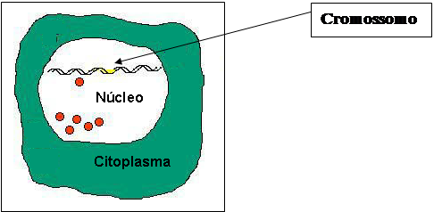
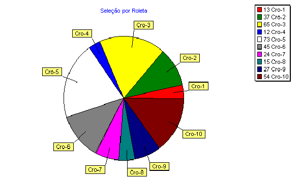
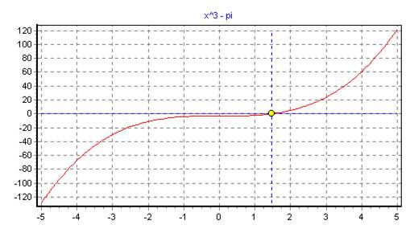
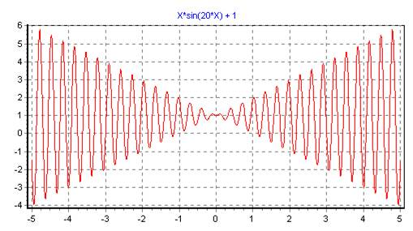
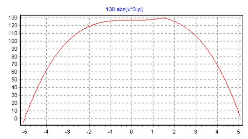
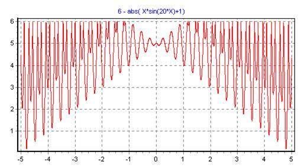
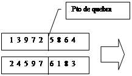
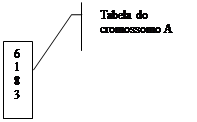

A Inteligência Artificial (IA) pode ser dividida, aproximadamente, em quatro períodos: o mais antigo é o chamado período subsimbólico que, rudemente, pode ser demarcado entre 1950 e 1965. Neste período, talvez devido às limitações computacionais da época, a representação do conhecimento não era feita simbolicamente mas numericamente. Como principais representantes desta época tem-se as Redes Neurais Artificiais(RNA) e as primeiras idéias sobre os Algoritmos Evolucionários (AE) . Segue a esta fase o chamado período simbólico que, grosseiramente, pode ser datado de 1962 a 1975. Este período se caracteriza por algoritmos de representações simbólicas como a Lógica de Predicados e Redes Semânticas. No período de conhecimento-intensivo, de 1976 a 1988, a ênfase recai na grande quantidade de conhecimentos incorporados nos Sistemas de Aprendizagem. Na fase atual, os pesquisadores de IA estudam nas mais diversas áreas, e tentam unir vários de seus métodos, integrando e combinando suas vantagens tanto quanto possível, visando fazer jus a uma das definições mais aceitas de IA : “Fazer os computadores realizarem tarefas que, no momento, as pessoas fazem melhor”[ 18 ].
Os Algoritmos Evolucionários surgiram rudimentarmente no período subsimbólico da IA, como métodos de pesquisa onde se procurava conseguir uma boa solução para problemas com vasto espaço de pesquisa. Estes espaços eram muito grandes para uma enumeração completa, principalmente devido aos recursos computacionais da época.
Os Algoritmos Evolucionários pertencem ao ramo da IA classificado como aprendizagem por indução: a observação, a descoberta, a pesquisa por regularidades e regras gerais são feitas por exploração, sem a realimentação de um professor.
Os Algoritmos Evolucionários formam uma classe de algoritmos de pesquisa probabilística e de otimização baseados no modelo de evolução orgânica, onde a natureza é a fonte de inspiração. Hoje, os principais representantes deste paradigma computacional, e que foram desenvolvidos independentemente, são conhecidos como: Estratégias Evolutivas, Programação Evolucionária e Algoritmos Genéticos.
Os Algoritmos Evolucionários formam um campo de pesquisa interdisciplinar pois envolvem disciplinas como a Biologia, Inteligência Artificial, Otimização Numérica e têm importância em quase qualquer disciplina de engenharia[11].
Para modelar a evolução orgânica, portanto, é necessária uma grande variedade de conceitos, tais como : genótipo, fenótipo, cromossomo, seleção natural, maximização, aprendizagem etc. pois existe uma inter-relação entre Algoritmos e Biologia, Pesquisa Aleatória e Algoritmos Evolucionários, Otimização e Inteligência Artificial.
A ênfase inicial da IA era baseada na inteligência individual guiada por tópicos de redes neurais e conhecimento simbólico. No cruzamento das neurociências e da informática buscava-se compreender o pensamento e o comportamento humano, a fim de reproduzí-los artificialmente[17]. Posteriormente, a ênfase foi deslocada para propriedades de aprendizagem de populações de indivíduos onde havia o benefício da alta diversidade de seu material genético: a população é inicializada e caminha para melhores regiões do espaço de busca, por meio de processos probabilístico-aleatórios (recombinação, mutação e seleção). O ambiente devolve a informação de qualidade (fitness) e o processo de seleção favorece os indivíduos de maior qualidade para sobrevivência e reprodução sobre os de pior qualidade. O mecanismo de recombinação permite a mistura de informações dos pais para seus descendentes e a mutação introduz inovação.
Os Algoritmos Evolutivos modelam, portanto, um processo de aprendizagem coletivo, dentro de uma população de indivíduos, onde cada um representa não somente um ponto no espaço de soluções potencial de um dado problema, mas um depósito temporal de conhecimento sobre as leis do ambiente [11].
A inspiração para o presente trabalho surgiu após uma apresentação sobre Algoritmos Genéticos ministrada pelo então doutorando Dr. Luiz V. Nonato, em 1995.
As novas idéias sobre a flexibilidade, robustez e aplicabilidade do algoritmo mostraram-se superiores, em muitos aspectos, aos métodos tradicionais de otimização.
Naquela apresentação foi utilizado um programa que demonstrava o poder de busca do algoritmo: a solução do Problema do Caixeiro Viajante. O programa necessitava, como parâmetros iniciais de entrada, as probabilidades de mutação e de recombinação. O palestrante ressaltou, enquanto entrava com os valores dos parâmetros no programa, que aqueles valores eram apropriados ao problema e, para valores muito diferentes daqueles, o tempo de resposta cresceria muito.
O problema da escolha dos parâmetros poderia ser resolvido, aproveitando a grande flexibilidade destes algoritmos, acoplando-se, ao algoritmo original, um segundo algoritmo que supriria o primeiro com os parâmetros necessários, otimizando-os em tempo de execução. Esta idéia foi a principal motivação desta dissertação.
A partir do problema intrínseco dos Algoritmos Genéticos - a escolha de seus parâmetros iniciais - principalmente as taxas de mutação e recombinação, surgiu nos centros de pesquisa uma modalidade de Algoritmos Genéticos que poderia solucionar este problema : Os Meta Algoritmos Genéticos (Meta-AG).
A falta de dados quantitativos e qualitativos, na literatura, sobre o desempenho de tais algoritmos, leva ao objetivo principal desta dissertação: realizar um estudo comparativo entre os Algoritmos Genéticos e os Meta Algoritmos Genéticos. Para tal foi necessário o desenvolvimento de um projeto computacional que :
· implementa as várias modalidades de Algoritmos Genéticos;
· permite a realização de testes comparativos de desempenho entre eles;
· registra os resultados em arquivos de “Log” apropriados;
· faz a análise gráfica e estatística a partir dos dados armazenados;
· tem utilidade na solução de alguns problemas clássicos de otimização.
O resultado foi um programa denominado TAG (Turbo Algoritmo Genético) que permite a realização de testes com Algoritmos Genéticos e Meta-Algoritmos Genéticos, com uma grande variedade de métodos e parâmetros. O programa permite, também, e de forma gráfica, achar pontos de máximo, mínimo e raízes de funções quaisquer de uma variável, bem como traçar percursos de comprimento mínimo a partir de mapas digitalizados.
Esta dissertação está dividida em onze capítulos e um apêndice.
Este primeiro capítulo introduz o leitor aos Algoritmos Evolucionários dentro do contexto da Inteligência Artificial e apresenta a motivação e os objetivos desta dissertação.
O Capítulo Dois condensa um resumo histórico da teoria da evolução natural, desde as primeiras idéias evolutivas até a revolucionária teoria de Darwin.
O Capítulo Três fornece alguns conceitos de genética, que serão necessários ao entendimento do texto e explica os principais operadores e as nomenclaturas que serão utilizadas.
O Capítulo Quatro aborda os Algoritmos Genéticos (AG), desde o histórico de sua criação até a descrição detalhada de sua lógica e a funcionalidade de seus operadores.
O Capítulo Cinco exemplifica o uso do algoritmo através da modelagem de um problema simples de minimização e aborda, nesta visão, a solução de dois problemas clássicos.
No Capítulo Seis apresenta-se uma discussão sobre o principal teorema dos AG: o teorema do esquema, que demonstra o poder de busca do algoritmo.
O Capítulo Sete mostra como os métodos e procedimentos internos do algoritmo podem ser manipulados e alterados visando uma melhor eficiência do mesmo. Introduz também dois dos principais conceitos que explicam o funcionamento de um AG: a Diversidade Populacional e a pressão seletiva.
O Capítulo Oito expõe a dependência do AG aos seus principais parâmetros de controle, e resume como estes parâmetros são definidos por alguns dos principais pesquisadores da àrea.
O Capítulo Nove introduz uma nova classe de algoritmos (Meta-AG) que procura resolver o problema dos parâmetros iniciais do AG usando, para isso, um outro AG.
O Capítulo Dez apresenta o projeto TAG: seus principais aspectos técnicos, objetivos e como foi parametrizado e utilizado na realização dos testes comparativos entre algumas modalidades de AG. Mostra também os resultados destes testes através da análise de vários gráficos comparativos.
O Capítulo Onze conclui este trabalho, analisando os resultados dos testes realizados.
O Apêndice A apresenta o programa TAG do ponto de vista do usuário: a navegação por suas telas e uma breve descrição de sua operacionalidade.
2 Origens do Pensamento
Evolutivo
“Idéias antigas são lentamente abandonadas, pois são mais que categorias e formas lógicas abstratas. São hábitos, predisposições, atitudes de aversão e preferência profundamente enraizadas. Além disso persiste a convicção - embora a história mostre que se trata de uma alucinação - de que todas as questões que a mente humana formulou podem ser respondidas em termos das alternativas que as próprias questões apresentam. Entretanto, na verdade, o progresso intelectual ocorre normalmente através do abandono completo das questões, juntamente com as alternativas que ela pressupõe - um abandono que resulta de sua vitalidade enfraquecida e de uma mudança do interesse mais urgente. Nós não resolvemos os problemas, passamos por cima deles. Velhas questões são resolvidas pelo desaparecimento, volatilização, enquanto os novos problemas, correspondentes às atitudes de iniciativa e preferência modificadas, tomam seu lugar. Sem dúvida, a revolução científica que teve seu clímax em A Origem das espécies é a maior dissolvente das velhas questões, a maior iniciadora de novos métodos, novas intenções, novos problemas dentro do pensamento contemporâneo .”
Essa conclusão, de 1910, do filósofo John Dewey, ainda é aceita atualmente, apesar de já terem decorridos 141 anos da publicação do livro de Darwin – A Origem das Espécies – tanto que os filósofos continuam achando que “não existem ciências atuais, atitudes humanas ou poderes institucionais que permaneçam não afetados pelas idéias que foram cataliticamente liberadas pelo trabalho de Darwin” [apud [ 1 ] ].
Embora a teoria de Darwin tenha prevalecido e seja aceita como verdadeira até hoje, não foi ele o primeiro a advogar uma teoria evolutiva. As origens do pensamento evolutivo, onde a idéia de evolução é apresentada pela primeira vez, em oposição ao criacionismo, são atribuidas a Jean-Baptiste de Lamarck(1744-1829). A teoria de Lamarck , conhecida até hoje como Lamarckismo, propunha o conceito de “herança de características adquiridas” segundo a qual admite-se que a informação pode ser gravada no organismo por suas necessidades ou por uma influência do exterior.[ 19 ]
Embora errôneas, as idéias de Lamarck foram o estopim para que, em meados do século XIX, idéias sobre evolução começassem a ser difundidas e discutidas.
As imagens do mundo dos filósofos orientais e da Grécia clássica foram dominadas por concepções estáticas ou cíclicas do tempo. Parmênides acreditava que as mudanças que ocorriam no mundo eram ilusões dos sentidos. Outros acreditavam que as mudanças são cíclicas e se repetem indefinidamente como o dia e a noite. Platão, no século IV a.C. concebeu uma síntese mais sutil dessas especulações segundo a qual aquilo que se observa no mundo não passa de sombras de arquétipos perfeitos[ 20 ].
No século XVIII os geólogos começaram a perceber que a Terra era mais antiga do que se supunha pois as rochas sedimentares tinham sido depositadas em épocas diferentes. Os fósseis eram considerados como restos de catástrofes naturais como inundações e vulcanismos.
Em 1788 James Hutton desenvolveu a teoria do uniformitarismo, segundo a qual os mesmos processos são responsáveis por eventos passados, atuais e futuros de modo que a Terra poderia ser muito antiga. O uniformitarismo teve grande influência para o entendimento das mudanças geológicas e biológicas ocorridas na Terra.
Na mesma época, outros cientistas conjeturaram que novas espécies poderiam ser geradas não somente de criações sucessivas mas também através de geração espontânea, a partir da matéria inanimada ou através de potencialidades latentes que estariam como que adormecidas em cada indivíduo.
Jean Baptiste Lamarck (1744-1829) apresentou em Philosophie Zoologic, pela primeira vez , uma teoria da evolução. Afirmava ele que formas de vida inferiores se formam continuamente a partir de matéria inanimada e que o caminho para uma maior complexidade é guiado pela natureza. Suas idéias, contudo, foram quase que universalmente rejeitadas, não apenas porque defendia a herança adquirida, mas também por pregar a evolução, que não era reconhecida pelos naturalistas de então.
Como naturalista, Charles Robert Darwin (1809-1882) iniciou sua carreira a bordo do navio H.M.S. Beagle, viagem que durou de 27 de dezembro de 1831 a 2 de outubro de 1836. Como membro ortodoxo da igreja Anglicana. Darwin, aparentemente, não aceitava a teoria da evolução até março de 1837, quando o ornitólogo John Gould lhe indicou que seus espécimes de tordos-dos-remédios das ilhas Galápagos eram tão diferentes que chegavam a representar espécies diferentes. Isto fez com que Darwin começasse a aceitar a possibilidade de transmutação de espécies e a juntar evidências nesse sentido. Darwin não só começou a pesquisar evidências, como também a procurar alguma teoria ou mecanismo que pudesse explicá-las.
Em 28 de setembro de 1838 Darwin teve a idéia do mecanismo de seleção natural. Em suas próprias palavras: “aconteceu de eu ler, como entretenimento, o ensaio de Malthus sobre população e, estando bem preparado para avaliar a luta pela existência que prossegue em toda parte pela longa e continuada observação dos hábitos de animais e plantas, imediatamente, percebi que, sob estas condições, variações favoráveis tenderiam a ser preservadas e as desfavoráveis destruídas.”[ apud 1 ]
Entre a primeira publicação de Darwin sobre este assunto e esse evento, vinte anos se passaram. Em 1844 ele escreveu, e não publicou, um ensaio sobre seleção natural e, em 1856, começou a trabalhar numa grande obra, Natural Selection que, entretanto, não foi acabada, pois em junho de 1858 ele recebeu um manuscrito intitulado “Sobre a tendência das variedades se afastarem indefinidamente a partir do Tipo Original”, escrito pelo jovem naturalista Alfred Russel Wallace (1823-1913). Wallace concebeu, independentemente de Darwin, o mecanismo de seleção natural a partir de suas viagens para a América do Sul e o arquipélago malaio.
Darwin, a conselho de amigos, publicou o resumo de seu grande livro, em 24 de novembro de 1859, sob o título de A Origem das Espécies por meio da Seleção Natural, ou a Preservação das Raças Favorecidas na Luta pela Vida - um livro que esgotou sua primeira edição em um dia e iniciou uma controvérsia que ainda não desapareceu inteiramente.
Darwin estendeu o conceito de um universo em constante mudança aos seres vivos, bem como introduziu o conceito de mutabilidade ao acaso, sem nenhum propósito divino ou filosófico que os norteassem. Desta maneira, não só os objetos inanimados mas também os seres vivos, ou seja, tudo estava sujeito às leis físicas, que Newton, Descartes, entre outros, haviam delineado. Desta forma, os antigos paradigmas de existir um propósito (divino ou não) para tudo, foram substituídos por uma visão mais simples e mecanicista.
A Origem das Espécies contém duas teses separadas: que todos os organismos descendem, com modificações, de ancestrais comuns, e que o principal agente de modificação é a ação da seleção natural sobre a variação individual. Darwin foi o primeiro a mostrar a realidade histórica da evolução, a partir de grande quantidade de dados registrados, como registros de fósseis, de distribuição geográfica das espécies, anatomia e embriologia comparada, e a modificação de organismos domesticados.
Grande parte de sua tese consistia em mostrar o quão naturalmente as observações poderiam ser compreendidas a partir da suposição da ancestralidade comum, e o quão improvável elas seriam sob a hipótese da criação. O conceito de “luta pela sobrevivência” era conhecido e até explicava o desaparecimento de espécies, mas nunca antes tinha sido intuído que a mesma variação que faz com que espécies pereçam, também poderia explicar, através da seleção, a origem de novas, isto é, as variações individuais entre organismos não eram, necessariamente, imperfeições, mas poderiam ser material para moldar novas formas de vida, mais bem adaptadas.
Organismos individuais não evoluem. Evolução biológica é a mudança nas propriedades das populações dos organismos, que transcendem o período de vida de um único indivíduo. As mudanças nas populações que são consideradas evolutivas são aquelas herdáveis através de material genético de uma geração para outra. A evolução biológica pode ser pequena ou substancial; ela abrange tudo, desde pequenas mudanças na proporção de um órgão do corpo até alterações sucessivas que levam os primeiros proto-organismos a se transformarem em caramujos, abelhas e girafas. A seleção natural é meramente a sobrevivência ou reprodução superior de algumas variantes genéticas, em comparação com outras, dependendo das condições ambientais que estejam prevalecendo no momento[ 1 ].
Atualmente a visão evolutiva do mundo adota uma concepção de tempo linear. Os objetos, especialmente os objetos vivos, foram diferentes no passado e serão diferentes no futuro. É a evolução, que produziu o estado presente e levará aos estágios futuros do mundo. É possível descrever seres vivos sem fazer perguntas sobre sua origem. Contudo, as descrições adquirem significado e coerência apenas quando vistas na perspectiva do desenvolvimento evolutivo [ 20 ].
3 Conceitos Básicos de
Genética
“O germe fertilizado de um dos animais superiores, sujeito como é a tão vasta série de mudanças, desde a célula germinativa até a velhice, talvez seja o objeto mais maravilhoso da natureza. É provável que dificilmente qualquer tipo de mudança que afete um dos pais não deixe alguma marca no material germinativo. Por outro lado, pela doutrina da reversão, o ovo torna-se um objeto muito mais maravilhoso, pois, além das mudanças visíveis que vai sofrendo, precisamos crer que ele contenha uma infinidade de caracteres invisíveis apropriados para ambos os sexos, para os dois lados do corpo e para a extensa linhagem de machos e fêmeas ancestrais, separada do presente por centenas ou mesmo milhares de gerações; e estes caracteres, como aqueles escritos em papel com tinta invisível, permanecem prontos para desenvolverem-se sempre que a organização for perturbada por certas condições conhecidas ou desconhecidas.”(A variação dos Animais e Plantas sob Domesticação, de Charles Darwin, 1868).[1]
Neste trecho do livro, percebe-se Darwin lutando para desenvolver uma teoria da transmissão dos caracteres, sem saber que Mendel havia publicado a solução dois anos antes. Observa-se, também, Darwin caindo em erro pois constata que mudanças que afetam os pais não deixam marca no ‘germe’ mas, por outro lado, ele percebeu o fato da variação oculta e a distinção crucial entre genótipo e fenótipo.
O genótipo é o projeto de um organismo, o conjunto de instruções recebidas dos pais. O fenótipo é a manifestação, numa série de etapas do desenvolvimento, da interação dessas instruções com fatores físicos e químicos - o ambiente em sentido amplo- que permite a realização do projeto do organismo.
Devem-se ressaltar dois dos mais importantes princípios da hereditariedade: o de que o fluxo de informação do genótipo para o fenótipo é unidirecional, e o de que as unidades hereditárias transmissíveis mantêm sua identidade, de geração em geração. O estudo da evolução, portanto, sempre esteve inseparavelmente ligado, desde o seu início, ao estudo da transmissão de características de um indivíduo a outro: a hereditariedade[1].
3.2 Cromossomos e Genes
Todos os seres vivos conhecidos são formados a partir de um conjunto de instruções que estão contidas no núcleo de todas as suas células. As estruturas que armazenam estas informações, de como será o indivíduo, recebem o nome de cromossomos. A quantidade, o tamanho e o formato destes cromossomos mudam de espécie para espécie, podendo variar de um único e simples anel circular até uma grande quantidade de bastões. No caso humano, por exemplo, existem 23 pares, ou seja, 46 cromossomos com forma de bastão, que dão aos seres humanos todas as características físicas (e, até mesmo, algumas psicológicas). A este conjunto de cromossomos dá-se o nome de genoma[9].
O cromossomo, por sua vez, é constituído, por uma cadeia de ácido desoxi-ribonucléico (ADN ou DNA), em forma de dupla hélice, que ele traz em seu interior. Essa molécula helicoidal que se encontra em forma contínua por toda extensão do cromossomo, por sua vez, é formada por uma série de pares de base (pb). Cada par de base (ou nucleotídeo) é constituído por uma purina (adenina [A] ou guanina[G]), acoplada a uma pirimidina específica (timina [T], ou citosina [C]), pareando-se A com T e C com G. Percebe-se, desta maneira, que os seres vivos são descritos por um alfabeto de 4 letras: G, C, T e A. Vale destacar que embora estes nucleotídeos sejam os mesmos em todos os animais e plantas, sua seqüência no cromossomo não é, em geral, a mesma para todos os indivíduos[ 6 ] .

Figura 1.1 - O Cromossomo e a célula
O cromossomo pode ser dividido, para efeito de estudos, em segmentos longitudinais chamados genes. Genes funcionam como unidade genética; para efeitos práticos, são considerados como a unidade básica do cromossomo e juntos, carregam todas as características que o organismo pode ter.
Os cromossomos, em geral, ficam agrupados em pares. São denominados cromossomos homólogos os membros de cada par que compartilham os mesmos tipos de genes.
Define-se como locus ou loco o lugar ocupado por um gene dentro de um cromossomo. O mesmo loco pode estar ocupado, em diferentes cromossomos homólogos, por formas gênicas diferentes.
São chamados de alelos a essas variantes de um mesmo gene. Todos estão, naturalmente, relacionados à mesma função geral, mas podem atuar diversamente. Assim , por exemplo, no caso humano, num determinado locus do cromossomo X existe um alelo que condiciona visão normal das cores e, no mesmo locus do cromossomo homólogo, poderá haver um alelo que impossibilite o seu portador de distinguir o vermelho do verde.
A reprodução dos seres vivos pode ser dividida em dois tipos: reprodução assexuada e reprodução sexuada. No primeiro caso, os organismos produzem clones, cópias idênticas de si próprios, ocorrendo, em geral, em organismos de baixa complexidade estrutural. Neste caso, estes organismos praticamente não apresentam variações, o que só ocorrerá quando houver mutações (descritas no item 3.6).
A reprodução sexuada, entretanto, é o modo usual de organismos mais complexos gerarem novos organismos. Neste caso, dois organismos, através da união de seus gametas, formam um novo organismo. Como cada gameta é haplóide, (carrega apenas metade do número de cromossomos de uma célula normal), a união de dois gametas irá gerar uma célula especial chamada ovo, diplóide, (com o número normal de cromossomos), metade dos quais provenientes do pai e a outra metade da mãe.
Entretanto, diversamente das demais células, o ovo, durante um processo chamado de desenvolvimento, irá se duplicar, diversas vezes, ocorrendo processos de citodiferenciação, pelos quais as células adquirem diferentes feições bioquímicas e estruturais.
A formação do organismo completo poderá ter características fenotípicas distintas das do pai e das da mãe, por dois motivos: primeiro, por apresentar um genótipo distinto do de seus pais (o organismo terá metade dos genes de cada genitor) uma distinção fenotípica também ocorrerá. Segundo, por eventos que podem ocorrer durante a meiose, como se apresenta a seguir.
3.5 Recombinação cromossômica (“crossover”)
Também conhecida como permutação ou simplesmente recombinação, é o fenômeno que ocorre durante a meiose, onde os cromossomos homólogos se pareiam antes de se segregarem para gametas diferentes. O que ocorre, basicamente, é que uma parte de um cromossomo pode ser trocada com a outra parte do cromossomo homólogo, fazendo com que alelos, que antes estavam no mesmo cromossomo, passem a ficar em cromossomos separados. Este fenômeno constitui a chamada Terceira Lei da Herança (de Morgan): ”Genes situados no mesmo cromossomo tendem a se manter unidos de uma geração à seguinte, só se separando pelo processo da permuta, cuja freqüência reflete, até certo ponto, as relações espaciais entre aqueles genes.”.
A hereditariedade é uma força conservadora que confere estabilidade a sistemas biológicos. Contudo, nenhum mecanismo composto de moléculas e sujeito ao impacto do mundo físico pode ser perfeito. Erros na cópia produzem seqüências alteradas de DNA - MUTAÇÕES - que são perpetuadas. Mutação é um termo vago, e é freqüentemente definido como uma mudança na seqüência de pares de base de um gene, mas às vezes o termo é usado de maneira mais ampla de modo a incluir mudanças no número e estrutura dos cromossomos (o cariótipo). Pode-se dizer que a recombinação difere da mutação porque a recombinação é, usualmente, uma troca recíproca de DNA (genes) que em si mesma não são alteradas. Contudo, a recombinação cromossômica não é sempre recíproca e pode ocorrer dentro dos limites de um gene e assim alterar a seqüência de pares de base. Assim, alguns eventos são, na realidade, mutações. A mutação representa a matéria prima da evolução. Pode-se dizer que, sem esse fator, a vida nunca passaria além de uma próto-bactéria.
Os Algoritmos Genéticos (AG) , juntamente com Estratégias Evolucionárias (EE) e Programação Evolutiva (PE) , formam uma classe de algoritmos de pesquisa baseados em evolução natural. Montando-se a árvore taxonômica dos algoritmos de pesquisa, os AG encontrar-se-ão no ramo chamado de Algoritmos Evolucionários[ 8 ]. Resumidamente, as técnicas de pesquisa são classificadas em:
· Técnicas Baseadas em Cálculo - usam um conjunto de condições necessárias e suficientes que devem ser satisfeitas pelas soluções de um problema de otimização .
· Métodos Diretos - utilizam informações da função como derivadas de primeira e/ou de segunda ordem.
· Métodos Indiretos - procuram por um extremo local resolvendo um conjunto , normalmente não linear, de equações que resultam quando se coloca o gradiente da função objetivo igual a zero.
·
Técnicas
Enumerativas - procuram a solução pesquisando seqüencialmente cada ponto do espaço de busca (finito e
discreto). Uma destas técnicas é conhecida como Programação Dinâmica.
· Técnicas dirigidas por pesquisa aleatória - baseadas em técnicas enumerativas, mas usam informações adicionais para dirigir a pesquisa.
· Simulated Annealing – técnica baseada no processo de evolução termodinâmica para dirigir a pesquisa para o estado de mínima energia .
· Algoritmos Evolucionários - baseados nos princípios de seleção natural
· Estratégias Evolucionárias
· Algoritmos Genéticos
· Programação Evolutiva
Algoritmos genéticos (AG) e estratégias evolucionárias (EE) são métodos que simulam, através de algoritmos, os processos da evolução natural (biológica) visando, principalmente, resolver problemas de otimização.
Estes algoritmos podem ser vistos como uma representação matemática - algorítmica das teorias de Darwin e da genética, chamada de a nova sintaxe da teoria da evolução, cujos principais postulados podem ser resumidos :
· A evolução é um processo que opera sobre os cromossomos do organismo e não sobre o organismo que os carrega. Desta maneira, o que ocorrer com o organismo, durante sua vida, não irá se refletir sobre seus cromossomos. Entretanto, o inverso não é verdadeiro: os cromossomos do organismo são o projeto e terão reflexo direto sobre todas as características desse organismo (o indivíduo é a decodificação de seus cromossomos).
· A seleção natural é o elo entre os cromossomos e o desempenho que suas estruturas decodificam (o próprio organismo). O processo de seleção natural faz com que, aqueles cromossomos, que decodificaram organismos mais bem adaptados ao seu meio ambiente, sobrevivam e reproduzam mais do que aqueles que decodificam organismos menos adaptados.
· O processo de reprodução é o ponto através do qual a evolução se caracteriza. Mutações podem causar diferenças entre os cromossomos dos pais e o de seus filhos. Além disso, processos de recombinação (“crossover”) podem fazer com que os cromossomos dos filhos sejam bastante diferentes dos de seus pais, uma vez que eles combinam materiais cromossômicos de dois genitores.
Estes postulados do processo de evolução biológica intrigaram John Holland, no início da década de 1970. Ele acreditava que, incorporando estes princípios em um programa de computador, pudesse resolver, por simulação, problemas complexos, justamente como a natureza o fazia: produzindo cegamente organismos muitíssimo complexos para resolver o problema de sua sobrevivência. Ele iniciou o trabalho manipulando cadeias de 0’s e 1’s, para representar os cromossomos, e cada organismo constituindo uma tentativa da solução do problema.
Seu algoritmo conseguia resolver problemas complexos de uma maneira muito simples. Como na natureza, o algoritmo não sabia o tipo do problema que estava sendo resolvido. Uma simples função de adequação fazia o papel da medida de adaptação dos organismos (cromossomos) ao meio ambiente. Assim, os cromossomos com uma adaptação melhor, medida por esta função, tinham maior oportunidade de reprodução do que aqueles com uma má adequação, imitando o processo evolucionário da natureza.
Em 1975, nos Estados Unidos, com o seu livro Adaptation in Natural and Artificial Systems, John Holland publicou o primeiro trabalho sobre AG. Este livro foi uma compilação de idéias e trabalhos que ele já vinha desenvolvendo há alguns anos. Uma outra escola de pesquisadores desenvolveu, na Alemanha, uma versão diferente, chamada de Estratégias Evolucionárias. Elas foram introduzidas inicialmente por Rechemberg [ 4 ], nos anos 60 e, mais tarde, desenvolvidas por Schwefel [ 4 ].
A partir da publicação do trabalho de Holland, a área de AG tem evoluído constantemente e, atualmente, usam-se algoritmos genéticos na solução de uma diversidade enorme de problemas de engenharia. Nota-se, também, esforços contínuos visando aprofundar os aspectos teóricos relativos a estes algoritmos.
Na resolução de problemas através da utilização de AG , dois aspectos devem ser considerados:
· uma maneira de codificação da solução em ‘cromossomos‘ - por exemplo pode-se adotar uma representação binária da solução;
· uma função de adequação – para indicar o valor de qualquer cromossomo, no contexto do problema, mostrando quanto este valor dista da solução procurada.
Cada cromossomo representa uma tentativa de solução, no espaço de soluções possíveis do problema.
A técnica de codificar soluções pode variar de problema para problema e de algoritmo genético para algoritmo genético. No trabalho original de Holland, a codificação é feita usando cadeias de bits. Segundo Goldberg[ 10 ] esta é a técnica que funciona melhor pois a base binária apresenta maior número de esquemas por bit de informação. Entretanto, outras técnicas podem ser usadas como, por exemplo, a utilização direta de números reais.
A função de adequação é a maneira de se fazer a ligação entre o algoritmo genético e o problema a ser resolvido. Ela toma como entrada o cromossomo, que é uma tentativa de solução do problema, e devolve um número real, informando o desempenho deste cromossomo no problema; este número representa o seu grau de adaptabilidade, que informa quão longe ou perto este cromossomo está da solução ótima do problema. Assim, a função de adequação faz, no algoritmo genético, o mesmo papel que o meio ambiente faria com os organismos vivos: fornece o grau de adaptação do organismo(cromossomo) ao ambiente e este valor será usado no processo de seleção para reprodução.
O algoritmo, proposto por Holland, é conhecido na literatura como Simple Genetic Algorithm ou Standard Genetic Algorithm ou simplesmente pela sigla SGA. Pode-se descrever o algoritmo, sucintamente, em seis passos [ 3 ] :
(1) Inicie uma população, de tamanho N, com cromossomos gerados aleatoriamente;
(2) Aplique a função de adequação em cada cromossomo desta população;
(3) Crie novos cromossomos através de cruzamentos de cromossomos selecionados desta população. Aplique recombinação e mutação nestes cromossomos;
(4) Elimine membros da antiga população, de modo a ter espaço para inserir estes novos cromossomos, mantendo a população com o mesmo número N de cromossomos;
(5) Aplique a função de adequação nestes cromossomos e insira-os na população;
(6) Se a solução ideal for encontrada ou, se o tempo (ou número de gerações) se esgotou, retorne o cromossomo com a melhor adequação. Caso contrário, volte ao passo (3).
Se tudo ocorrer bem, esta simulação do processo evolutivo irá produzir, à medida que as gerações forem se sucedendo, cromossomos cada vez mais bem adaptados, isto é, com melhor valor da função de adequação, de maneira que, no final, obtém-se uma solução (cromossomo) com alto grau de adequação ao problema proposto.
Valores típicos para o tamanho da população estão entre 20 e 200.
Como mencionado, o melhor método para trabalhar com o AG é codificar os parâmetros de uma possível solução do problema em uma cadeia de bits de 0’s e 1’s[ 10 ]. Isso permite uma manipulação fácil e eficiente dos operadores genéticos sobre estes cromossomos. Número reais, ao invés de cadeias de bits, podem ser usados com alterações nos operadores de reprodução[ 2 ]
Quando os parâmetros do problema são inteiros, a representação é direta. Por exemplo, se um parâmetro inteiro estiver restrito ao intervalo [-121 , 113 ] pode-se usar uma cadeia, ou parte dela, com 8 bits reservados para este parâmetro (1 de sinal e 7 para a amplitude 27 = 128).
No caso de parâmetros com valores reais, pode-se trabalhar com sua representação em formato inteiro. Por exemplo, se um parâmetro do problema variar na faixa de [ 2.12 a 15.72], com precisão de duas casas decimais, pode-se multiplicá-lo por 100 e utilizar a parte inteira do produto. Dessa forma, recai-se no caso anterior.
A função de adequação tem o papel de ligar o algoritmo genético ao problema propriamente dito. Ela é usada para avaliar o cromossomo para posterior uso pelos operadores de reprodução. A função de adequação possui como entrada uma cadeia de bits e como saída um valor real.
Deve-se notar que é necessário dispor de algum modo para avaliar o quão distante um cromossomo está da solução ideal, o que nem sempre é uma tarefa trivial. Este processo de adequação pode, dependendo da complexidade do problema, ser exato ou não. Nos casos de grande complexidade, alguma heurística poderá ser utilizada.
A função de adequação se diz normalizada quando seus valores estão sempre dentro do intervalo [0,1]. Isto significa que um cromossomo com valor de adequação 1 (o maior valor) é a melhor solução possível. Portanto, este cromossomo é a resposta do problema. No caso oposto, um valor 0 (zero) representaria a pior solução possível.
Não é necessário, contudo, que a função seja normalizada pois, basicamente, é uma função de comparação de cromossomos e, o que interessa, na verdade, são os valores relativos entre um cromossomo e os outros. Para facilitar o algoritmo de seleção é necessário que a função de adequação nunca apresente valores negativos.
O processo de seleção ocorre após a aplicação da função de adequação nos cromossomos. Ela desempenha o papel da seleção natural na evolução, selecionando para sobreviver e reproduzir os organismos melhor adaptados ao meio, no caso, os cromossomos com melhor valor na função de adequação.
A maneira pela qual os cromossomos são selecionados para reprodução pode variar, dependendo do método utilizado. Entretanto, é certo que os cromossomos melhor adaptados terão, necessariamente, uma probabilidade maior de sobrevivência e reprodução que os de baixa função de adequação.
O modo pelo qual Holland propôs o processo de seleção, em seu SGA, é conhecido como método de seleção por roleta. Se fi é o valor da função de adequação do i-ésimo cromossomo, e fm a soma dos valores da função de adequação sobre todos os cromossomos então, neste método, cada cromossomo receberá um setor da roleta imaginária, de ângulo 2p fi / fm. Ou seja, um setor com ângulo proporcional ao grau de adaptabilidade do cromossomo.
O próximo passo é selecionar um cromossomo com probabilidade igual ao do setor por ele obtido, isto é, a probabilidade de selecionar um dado cromossomo, para reprodução, é proporcional à sua função de adequação. A seleção é realizada conforme descrito a seguir:
(i) Gera-se um numero aleatório entre 0 e 2p;
(ii) Soma-se, em qualquer ordem, o valor do setor alocado de cada cromossomo. Continua-se somando enquanto esta soma não ultrapassar o número aleatório gerado;
(iii) O cromossomo cujo setor fizer esta soma ultrapassar o número aleatório gerado será o cromossomo escolhido; observe-se que isto sempre ocorrerá, pois a soma de todos os setores é 2p.
Este processo é semelhante a uma roda de roleta, na qual os setores vão se sucedendo, sob um pino marcador, até que a roda pare com o pino sobre um setor qualquer. É claro que, quanto maior a largura do setor, maior a probabilidade deste setor se encontrar sob o pino marcador. Na figura 4.1 ilustra-se o método descrito.
Cromossomo 1 2 3
4 5 6 7 8 9
10
Adequação
(em graus) 13 37
65 12 73
45 24 15
27 54
Somas
Parciais 13 50
115 127 200
245 269 284
311 360
Número
aleatório (entre 0 e 360) 171
259 90 230
162 321
Cromossomo.
Escolhido
5 7 3
6 5 10

Figura 4.1 - Exemplo de Seleção por Roleta
Não é necessário converter a função de adequação em graus (ou radianos), mas isso facilita a compreensão e a visualização do algoritmo. O que é feito, na verdade, é apenas somar a função de adequação dos cromossomos da população, em seu estado ‘bruto’, e achar um número aleatório entre 0 e esta soma.
A cada dois cromossomos escolhidos desta maneira com reposição, são gerados dois novos cromossomos (seus clones). O processo de seleção termina quando o número de novos cromossomos atingir o mesmo valor da população anterior. Quando isto ocorrer, a antiga população será substituída por esta nova geração.
Quando o algoritmo troca toda a antiga população pela nova, ele é chamado Generational GA. Deve-se ressaltar que existem outras variantes, com relação à maneira de substituir a população antiga, como por exemplo, trocando apenas uma fração da antiga população pela nova, caso em que recebe o nome de Steady-State GA [ 8 ].
A reprodução é a maneira pela qual dois novos cromossomos são gerados, a partir de dois antigos. Estes dois cromossomos são copiados (portanto, os filhos, inicialmente são clones dos pais) e a seguir os operadores de recombinação e mutação vão agir sobre eles, podendo torná-los diferentes de seus pais.
O processo, portanto, depende de dois parâmetros, escolhidos a priori pelo programador/operador, e são: A probabilidade de recombinação (“crossover”), denotada por pc, e a probabilidade de mutação, denotada por pm. (Valores típicos para pc estão entre 0.5 e 1.0 e para pm entre 0.001 e 0.02) .
Recombinação é o processo através do qual dois cromossomos (A e B) trocam genes, como descrito a seguir:
Um ponto do cromossomo (locus) é escolhido aleatoriamente. Ambos os cromossomos são quebrados neste mesmo ponto. A primeira parte do cromossomo A é concatenada à segunda parte do cromossomo B, formando um novo cromossomo. O mesmo ocorre com as outras partes: a primeira parte do cromossomo B é ligada à segunda parte do cromossomo A, formando um segundo cromossomo. Este processo pode ser sumarizado através do seguinte algoritmo:
(i) - Gera-se um numero aleatório entre 0 e 1 ;
(ii) - Se este número for menor ou igual a pc, então a recombinação irá ocorrer, caso contrário não haverá recombinação;
(iii) - Escolhe-se, aleatoriamente, o ponto em que haverá a quebra;
(iv) - Quebram-se os dois cromossomos neste ponto;
(v) - Formam-se dois novos cromossomos juntando-se a primeira parte do cromossomo A com a segunda do cromossomo B, e a primeira parte do cromossomo B com a segunda parte do cromossomo A .
A figura 4.2 ilustra este algoritmo.
Exemplo :de recombinação de um ponto
Pais : (recombinação
após o sétimo bit) Filhos
:
1 1 1 1 1 1 1 | 1 1 1 Þ 1 1 1 1 1 1 1 0 0 0
0 0 0 0 0 0 0 | 0 0 0 Þ 0 0 0 0 0 0 0 1 1 1
Pais : (recombinação após
o segundo bit) Filhos
:
1 0 | 1 1 0 1 0 0 0 1 Þ 1 0 0 1 1 0 0 0 1 1
1 1 | 0 1 1 0 0 0 1 1 Þ 1 1 1 1 0 1 0 0 0 1
Figura 4.2 - Recombinação Simples
Pode-se também quebrar os cromossomos em dois ou mais pontos. Denomina-se recombinação simples ou tradicional quando o cromossomo é quebrado em um ou dois pontos.
A recombinação multi-ponto ocorre quando os cromossomos são quebrados em k segmentos (k>2), e estes segmentos, alternadamente, são trocados entre os dois cromossomos. O outro extremo ocorre quando todos os bits, ao invés de segmentos, são trocados, com alguma probabilidade fixada, caso em que a recombinação é denominada uniforme.
O operador de mutação pode ser aplicado, indistintamente, antes ou depois do operador de recombinação e, diferentemente da recombinação, ele irá operar usando apenas um único cromossomo.
O operador de mutação percorre todos os bits do cromossomo e, para cada bit, gera um evento com probabilidade pm; se este evento ocorrer, o valor do bit é trocado.
Como a probabilidade pm é muito baixa, poucos cromossomos são afetados por ela.
Um exemplo de mutação é mostrado na figura 4.3. Observa-se que apenas foi alterado o valor do terceiro bit do segundo cromossomo.
Número
Cromossomo antigo
Números Aleatórios Novo cromossomo
1 0
1 0 1
0.12 ; 0.70 ; 0.45 ;
0.92 0
1 0 1
2 1
1 0 1 0.92 ; 0.13 ;
0.06 ; 0.23 0 1 1
1
Figura 4.3 - Exemplo de mutação (pm = 0.08)
5 Modelagem de alguns problemas
Visando exemplificar a aplicação de AG, neste
capítulo são apresentados alguns problemas típicos e sua modelagem.
Seja F(x) = cos(x2) + x2 sin(x).
Minimizar F(x) no intervalo [-1, +1 ], com precisão de 4 casas decimais.
Para resolver este problema, usando AG, é necessário definir :
· cromossomo;
· a função de adequação.
Como a função a ser minimizada é de uma só variável (a variável x), é suficiente apenas um parâmetro no cromossomo, representando esta variável. É necessário também determinar quantos bits este cromossomo conterá (seu tamanho), de maneira que possa representar x com 4 casas decimais.
Como será utilizada a representação binária para os cromossomos, o intervalo [-1,+1] deverá ser quantizado, isto é, este intervalo deve ser divido em pequenos segmentos de maneira que cada segmento possa ser representado por um número inteiro. (Técnica desenvolvida por Michalewicz[ 5 ]).
Uma precisão de 4 casas decimais significa um intervalo máximo de 0.0001 entre dois pontos contíguos do eixo. Como o comprimento do intervalo [-1, +1] é de 2 unidades, deve-se dividí-lo em N partes, de maneira que cada parte não tenha comprimento maior que 0.0001:
2 / N <
= 0.0001
Portanto:
N >= 2/0.0001 ==> N >= 20.000
O valor mínimo de N é igual a 20.000.
O intervalo terá que ser dividido em 20.000 partes. São necessários 15 bits para a representação, uma vez que:
214 = 16.384 < 20.000 < 215 = 32.768
Dessa maneira, adota-se um cromossomo com 15 bits, representando uma variável inteira x1 que poderá variar de 0 a 20.000.
A conversão de x1, que é a variável embutida no cromossomo, para a variável original x, a variável original do problema, é feita da seguinte maneira:
- a partir do início do intervalo (-1), soma-se x1* 0.0001 e obtém-se o ponto correspondente em x.
x = -1 + x1 * 0.0001
Dessa maneira:
- quando x1 = 0 ==> x = -1 (limite inferior do intervalo);
- quando x1 = 20.000 ==> x = +1 (limite superior do intervalo).
Valores de x1 que, por ação dos operadores genéticos, porventura se situem fora da escala prevista (por exemplo x1 = 25000) deverão receber zero como função de adequação.
A função de adequação tem o papel de selecionar os melhores cromossomos, isto é, quanto maior o valor desta função, melhor será o cromossomo (mais perto da solução).
Como no exemplo pretende-se minimizar a função F, a função de adequação terá o papel inverso de F: ela deverá ser mínima quando F(x) for máxima e, máxima quando F(x) for mínima. Isto é, o cromossomo com menor F(x) deverá ter uma função de adequação f(x1) maior.
Uma função com esta característica pode ser a função oposta de F:
g(x1) = - F(x)
Como a função de adequação deve ser sempre não negativa, pode-se somar uma constante positiva, de maneira que o resultado seja sempre não negativo. Observando F, verifica-se que ela nunca ultrapassa, em módulo, o valor 2 no intervalo considerado.
Com isso, adota-se, para a função de adequação:
f(x1) = 2 - F(x)
Uma vez que F(x), em módulo, é sempre menor que 2 no intervalo [-1,+1], a função f(x1) será sempre positiva em [-1, +1].
Escrevendo f em função do cromossomo tem-se, finalmente:
f(x1) = 2 - F(-1 + x1 / 10.000)
Isto é basicamente o que se necessita, para resolver este problema, usando AG, uma vez que o algoritmo é sempre o mesmo.
5.2 Obtenção da raiz de uma função
Os algoritmos genéticos só resolvem problemas de maximização (minimizar F(x) é equivalente a maximizar –F(x) ).
Para se encontrar uma raiz de uma função, usando AG, é necessário achar uma função de adequação cujo(s) ponto(s) de máximo(s) seja(m) equivalente(s) à raiz(es) da função.
Uma candidata para a tarefa seria a função :
H(x) = - abs(F(x))
Onde abs é a função absoluto (abs(x) = { x se (x>=0) ou -x se (x<0) })
H(x) é sempre não-positiva e tem seu valor máximo (= 0) nas raízes de F(x). Contudo, H(x) não cumpre o requisito básico para ser uma função de adequação : a função nunca deve apresentar valores negativos.
Este problema pode ser resolvido adicionando-se uma constante positiva à função H(x), o que conduz a uma nova função de adequação G:
G(x) = MAX + H(x)
MAX é uma constante positiva escolhida de modo que seu valor seja superior a todos os valores de contradomínio de F no intervalo dado:
{ MAX ³ abs(F(x)) | " x Î domínio }
Isso garante que G nunca poderá ter valores negativos (condição necessária para uma função de adequação).
Assim, buscar um ponto maximal de G(x) é equivalente a buscar uma raiz de F(x). A definição do cromossomo é análoga ao item 5.1.1. Quanto à definição da função de adequação, serão estudadas duas funções descritas a seguir.
5.2.1 Função de adequação para obtenção de raízes
Para modelar a função de adequação para obtenção de raízes serão utilizadas como exemplo duas funções que também serão utilizadas, posteriormente, para testes comparativos.
São elas :
a) F1(x)= x3 - Pi
b) F2(x)= x * sin(20*x) +1
O critério de parada é obtido quando a raiz da função é achada, no caso (a), ou uma das raízes for encontrada, no caso (b) [ critério de Bolzanno ].
O domínio das funções foi restrito ao intervalo [-5, +5] (caso em que a função F1 apresenta uma única raiz e a função F2, 50 raízes).
O gráfico das funções é mostrado nas figuras 5.1 e 5.2 :

Figura 5.1 - A função F1 com uma raiz

Figura 5.2 - A função F2 com 50 raízes no intervalo [-5,5]
Observando-se as figuras verifica-se que 130 e 6 são valores adequados para a constante MAX (de G1 e G2 respectivamente). As funções de adequação para achar as raízes de F1 e F2 tornam-se:
G1(x) = 130 – abs( X3 – pi)
G2(x) = 6 – abs(x * sin(20*x) +1)
Essas duas funções são mostradas nas figuras 5.3 e 5.4.

Figura 5.3 - G1 : A função de adequação para achar a raiz de F1

Figura 5.4 - G2:A função de adequação para achar as raízes de F2
5.3 TSP : O Problema do Caixeiro Viajante
Problemas combinatórios são problemas discretos, em geral NP (Não Polinomiais). Isso significa que o grau de dificuldade (espaço de busca) cresce exponencialmente com os parâmetros do problema.
Um problema combinatório, NP, de otimização, é o clássico “Problema do Caixeiro Viajante” conhecido, em inglês, pela sigla TSP (Traveling Salesman Problem).
Neste problema um caixeiro deve percorrer um conjunto de “N” cidades e voltar a sua cidade de origem, passando uma única vez em cada cidade, de modo que a distância percorrida seja mínima.
O número de caminhos possíveis pode ser deduzido, como explicado a seguir.
Seja F(n) a função que fornece o número de caminhos possíveis com “n” cidades. Ao se acrescentar mais uma cidade (n+1), quantos novos trajetos são introduzidos?
Para se obter esse número, o raciocínio a ser feito deve considerar:
· qualquer caminho ligando as “n” cidades é composto de “n” arestas;
· ao se introduzir uma nova cidade (C, mostrada na figura 5.5), qualquer das “n” arestas de um caminho poderá ser ‘quebrada’, unindo a nova cidade ao caminho, isto é, a aresta que ligava A-B poderá ser quebrada ligando A-C-B;
· assim, para cada um dos antigos caminhos, surgem “n” novos caminhos;
· como havia F(n) caminhos distintos , tem-se : F(n+1) = n*F(n) ;
· três cidades apresentam um único caminho : F(3) = 1 ;
· então F(n+1)=n*(n-1)*(n-2)*(n-3)* .....*3*F(3) = n! / 2 ;
·
finalmente : F(n) = (n-1)! / 2 .

Figura 5.5 - Inserção de uma cidade no percurso
Para se ter uma idéia do grau de dificuldade para resolver este problema, basta dizer que o tempo esperado para se achar o menor caminho entre 25 cidades é de mais de 20 (vinte) vezes a idade do universo, supondo que seja possível calcular 10.000 caminhos por segundo.
Usando um AG , a solução para este problema tomou menos de 4 minutos (em um Pentium II de 350Mhz), fato que mostra o real poder de busca de um AG.
Os problemas combinatórios, devido às suas características peculiares, são modelados, em geral, de forma a otimizar a velocidade da pesquisa, embutindo, tanto nos operadores (Recombinação e Mutação) como na definição do cromossomo, as restrições intrínsecas do problema diminuindo, dessa maneira o tempo de processamento.
No TSP, se fosse utilizada a abordagem tradicional, com as cidades codificadas em binário e os operadores tradicionais, aconteceriam dois tipos de problemas :
· o tamanho de um campo em binário (gene), reservado para cada cidade, poderia comportar valores maiores do que o número máximo de cidades (um campo de 4 bits por gene, por exemplo, permitiria codificar até 16 cidades mesmo que o número de cidades do problema fosse 10);
· um operador tradicional de mutação , agindo sobre um cromossomo binário, poderia fazer com que houvesse repetições no número da cidade em diferentes genes do cromossomo.
Para se resolver estes problemas seria necessário construir um operador que refizesse o cromossomo retirando estes erros, o que consumiria uma fatia razoável do tempo de processamento.
Na literatura encontram-se três representações para a modelagem do cromossomo[5], com os respectivos operadores:
· Representação por adjacência : Nesta representação, a cidade J é escrita na posição I se e somente se o caminho vai da cidade I para a cidade J (em alguma parte do percurso). Por exemplo, a seguinte representação :
( 4 3 1 2 )
Mapeia o caminho :
1 ® 4 ® 2 ® 3 ® 1
· Representação ordinal : Nesta representação, o caminho (P) é construído a partir de duas listas: a primeira denominada C, denota as cidades ainda não visitadas, descritas ordenadamente; a segunda lista, denotada por S, indica em que ordem os elementos de C devem ser retirados para se obter o caminho. Um exemplo com quatro cidades elucidará. Inicialmente :
C = (1 2 3 4) S = (1 3 1 1 ) P = ( )
O primeiro símbolo de S é 1, significa : retire a primeira cidade de C e coloque-a em P. Obtendo-se:
C = (2 3 4) S = (1 3 1 1) P = (1)
O próximo símbolo em S é 3, significa : retire a terceira cidade de C e coloque-a em P. Obtendo-se:
C = (2 3) S = (1 3 1 1) P = (1 4)
A seguir encontra-se em S novamente o símbolo 1, o que significa : retire a primeira cidade de C coloque-a em P. Obtendo-se:
C = (3) S = (1 3 1 1) P = (1 4 2)
Finalmente, usando o mesmo algoritmo :
C = ( ) S = (1 3 1 1) P = (1 4 2 3)
Sendo P o caminho final :
1 ® 4 ® 2 ® 3 ® 1
A principal vantagem em se usar este tipo de representação é que o operador de recombinação funciona do modo tradicional (como em uma cadeia de bits).
· Representação por caminho: nesta representação, a mais natural, o mapeamento da rota é feito pela seqüência do número das cidades percorridas. Por exemplo o seguinte cromossomo :
( 1 4 2 3 )
indica a seguinte seqüência:
1 ® 4 ® 2 ® 3 ® 1 (sempre há o caminho, implícito, da última cidade à primeira).
Como esta representação foi usada nesta dissertação, apenas operadores relativos a ela serão apresentados em detalhes.
5.3.2 Operador de recombinação
O operador de recombinação é um operador dual e pode operar em mais de um ponto. Será analisado o caso da recombinação simples pois as outras formas de recombinação, com mais pontos, são análogas. A técnica vista a seguir é conhecida como PMX (partially mapped, proposta por Goldberg e Lingle). Outras técnicas como OX (order) e CX (cycle) podem ser encontradas na literatura [ 5 ].
A recombinação, na representação por caminho, pode ser feita em duas etapas :
Na primeira etapa, os dois cromossomos a serem recombinados são pareados e seus alelos trocados a partir do ponto de quebra, como mostrado no exemplo a seguir:
 A ® B ®
Pode-se verificar que os cromossomos ficaram inconsistentes, pois existem cidades repetidas tanto em A (cidades 1 e 3) quanto em B (cidades 4 e 5).
Para corrigir é necessária a utilização de um operador de ‘reparo’ que terá que deixar ambos cromossomos consistentes novamente. É importante observar que o cromossomo é consistente se e somente se :
· todos os seus genes possuem cidades válidas (entre 1 e N) ;
· não existem cidades repetidas.
Como ambos os cromossomos, por hipótese, estavam íntegros antes da recombinação, então as possíveis inconsistências (repetições de cidades) foram devidas às partes que foram trocadas. Inicialmente o operador de reparos constrói um mapa, ou tabela, dos genes que foram trocados :

A seguir, verifica , na primeira parte de cada cromossomo, se algum gene consta de sua tabela, se isso ocorrer é porque ele está repetido e deverá ser trocado pelo gene correspondente da tabela oposta.
No exemplo, verifica-se que os genes 1 e 3, do cromossomo A fazem parte de sua tabela (indicando repetição) e por isso deverão ser trocados (segundo a tabela):
A troca continua ocorrendo enquanto existirem elementos (na primeira parte do cromossomo) na sua respectiva tabela :
Uma vez que não há mais elementos da tabela, na primeira parte do cromossomo, o processo de reparo do cromossomo A esta completado.
Analogamente, para o cromossomo B tem-se:
E o processo de reparo em B está completado.
Finalmente :
A ® B ®
O operador de mutação para o TSP consiste simplesmente em se
trocar de posição duas cidades escolhidas aleatoriamente dentro do cromossomo.
2
4 5 9 7 6
1 8 3 2
4 3 9 7
6 1 8
5
São quatro, as principais diferenças que distinguem os Algoritmos Genéticos (AG) de outras técnicas mais convencionais de otimização :
1a- manipulação direta da codificação;
2a- busca sobre uma população e não sobre um único ponto;
3a- busca cega, através de tentativas;
4a- busca usando operadores estocásticos (probabilísticos) e não através de regras determinísticas.
O AG é um método muito robusto, uma vez que não faz qualquer restrição sobre como deve ser a função a ser otimizada, nem mesmo a usa de nenhuma outra maneira a não ser como uma função.
Outros métodos carecem desta robustez pois ou usam a própria função como fonte de informação, requerendo que a função seja contínua ou derivável, ou restringem-na de algum outro modo qualquer. A melhor característica dos AG é essa robustez : enxergar a função a ser otimizada como uma caixa preta.
Já foi visto anteriormente que os algoritmos genéticos funcionam imitando, ou melhor, simulando o método de seleção natural, com o objetivo de otimizar uma função. Pode-se, contudo, encará-los de uma outra maneira: como um método heurístico de busca num espaço multidimensional. Isto é, cada parâmetro do problema a ser otimizado pode ser considerado uma dimensão independente do espaço e o método deve achar o melhor valor de cada parâmetro de modo a otimizar o problema. Nos algoritmos genéticos isto é feito concatenando a representação de todos os parâmetros em um único, chamado de cromossomo ou indivíduo, e a busca é feita usando-se, como representação, este único parâmetro.
Se o objetivo é encontrar um ponto de máximo de uma função F, por exemplo, poder-se-ia adotar o seguinte procedimento:
(i) Inicialmente (n= 0), N pontos do espaço de busca são escolhidos ao acaso, formando um conjunto primitivo Pn de tentativas de solução.
(ii) Para cada ponto vi do conjunto Pn, aplica-se a função de adequação f = F+Cte, resultando um número, eval(vi), que é denominado valor de avaliação. Desta maneira tem-se um conjunto de duplas (vi, eval(vi)), formado pelos pontos e seus respectivos valores de avaliação:
Cn= { (vi, eval(vi)) / vi Î Pn e eval(vi) = f(vi) }
Deseja-se, no próximo passo, montar um novo conjunto
de pontos Pn+1 que, de alguma maneira, tenham valores superiores, ao
menos na média, do conjunto anterior (Pn).
Como as únicas informações de que se dispõe sobre o problema são os próprios pontos e suas avaliações, a única maneira que se tem, para se avançar em busca da solução, é usar estas informações.
(iii) Forme-se um novo conjunto de pontos, Pn+1, combinando ( com os operadores genéticos ) pontos do conjunto anterior, Pn , de modo que, pontos com valores eval(vi) maiores tenham preferência de escolha na formação deste novo conjunto.
(iv) Substituir o conjunto de pontos anterior por este novo conjunto.
(v) Repitir os passos (ii), (iii) e (iv) até que a solução seja alcançada ou algum critério de término tenha ocorrido (por exemplo até que n atinja um valor limite pré-fixado).
Do ponto de vista matemático, os AGs não foram tratados, ainda, em profundidade. Existe um único teorema, o teorema do esquema, através do qual se procura explicar, teoricamente, porque os AGs convergem e com que velocidade. Nos próximos itens esse teorema é apresentado.
Usar-se-á indistintamente os termos : ponto, indivíduo, cromossomo ou cadeia como sinônimos para representar cada elemento do espaço de busca, bem como população ou conjunto de pontos para denominar os agrupamentos de pontos.
Uma maneira de estudar o comportamento dos AGs, de forma matemática, é através do que se chama de esquema. Um esquema é uma máscara, ou padrão, que tem a capacidade de representar de um até todos os pontos do conjunto.
No caso de uma codificação binária, um esquema é uma cadeia formada com o alfabeto A={ 0, 1, * }. O comprimento do esquema (L) é definido como o número de elementos que constituem a cadeia.Assim, por exemplo, são esquemas de comprimento 6 : ‘0*0101’, ‘******’, ‘101110’, ‘*0000*’ etc..
O sinal ‘*’ (asterisco) em um esquema indica que quaisquer caracteres (0 ou 1) poderiam estar naquela posição. Isto é, o sinal de asterisco representa ambos os caracteres (também chamado de símbolo coringa).
Assim o esquema 10* representa 2 pontos: 100 e 101, e o esquema 10*01* representa 4 pontos:: 100010, 100011, 101010, 101011.
Seja uma população P, composta por 4 cromossomos com 3 genes:
100
011
010
111
Os seguintes esquemas representam o primeiro indivíduo ‘100’ :
100
10*
1*0
*00
1**
*0*
**0
***
O número máximo de esquemas de uma população de comprimento (length) L, de uma população cujos cromossomos possuem L genes, será 3L pois, para cada posição na cadeia, pode-se ter 3 símbolos : 0,1 ou *.
Um único esquema de comprimento L representa exatamente 2r cromossomos onde r é o número de asteriscos no esquema. De outro modo, um cromossomo de mesmo comprimento é representante de 2L esquemas (pois para cada posição da cadeia pode-se ter ou o símbolo original do cromossomo ou o asterisco).
Portanto numa população de comprimento L e de tamanho N tem-se no máximo: N * 2L esquemas sendo representados simultaneamente (2L esquemas para cada cromossomo) .
No caso da população P, exemplificada anteriormente, tem-se no máximo 32 (=4 * 23 ) e no mínimo 8 (= 23 , no caso limite de todos os indivíduos serem iguais ou de termos somente um indivíduo), esquemas presentes na população. Entretanto, como o limitante superior é 3L então, o máximo neste caso será 33 = 27 e não 32.
Ou seja, se :
L = Comprimento da cadeia (quantidade de bits para representá-la) e,
k = Quantidade de símbolos do alfabeto (não necessariamente 2),
N = Tamanho da população
e
TE = O número total de esquemas presentes na população
Então, obtém-se para TE :
|
kL £ TE £ min[ (k+1)L, N*kL ] |
Fórmula 6.1 – Número total de esquemas
Alguns conceitos e definições sobre esquemas nos serão úteis para auxiliar a escrever uma fórmula matemática para o comportamento dos AGs.
Chama-se ordem de um esquema S , denotado por O(S), o número de símbolos que não sejam o asterisco (símbolo coringa). No caso do alfabeto binário seria a quantidade de símbolos 0s e 1s presentes no esquema. Por exemplo :
O(11001) = 5 ,
O(1****0) = 2, e
O(10*) = 2 .
Portanto, a ordem do esquema é o seu comprimento menos o número de asteriscos.
Chama-se comprimento, (defining length), do esquema, e denotado por d , à distância entre o primeiro e o último símbolos não asteriscos do esquema.
Por exemplo:
d(1***0) = 4 (o 0 esta na 5a posição e o 1 na 1a , então 5-1 = 4),
d(******11) = 1 ,
d(0**1**1*) = 6 ,
d(*1*1*****) = 2.
d(*1*) = 0 .
Chama-se de função de adequação de um indivíduo vi, e denota-se por eval(vi), ao valor da função de avaliação quando aplicada a este indivíduo.
Chama-se valor médio de adequação da população, ou simplesmente adequação média, e que denota-se por Em , a média dos valores de adequações sobre todos os indivíduos da população :
Em = å eval(vi ) / N (A soma estendendo-se por toda a população)
Denota-se, também, por m(S, t) o número de indivíduos que são representados pelo esquema S no instante t, e m(vi , t) o número de cópias do indivíduo vi no mesmo instante .
.
Os AG, processam gerações de populações (P) ao longo do tempo (t), seguindo o seguinte algoritmo :
|
1) Selecione P(t) de P(t - 1) 2) Recombine P(t) 3) Avalie P(t) 4) t ¬ t + 1 |
No 4. passo simplesmente avança-se o ponteiro do tempo.
No 3. passo aplica-se a função de avaliação à cada elemento da população.
A parte principal está nos passos 1 e 2, em que a seleção e os processos de recombinação tomam efeito.
Estudar-se-á então qual a influência destes 2 passos com os esquemas presentes na população.
Denota-se por m(S, t) o número de indivíduos na população representados pelo esquema S no instante de tempo t .
Por exemplo, considere as população nos instantes marcados :
|
t = 0 |
t = 1 |
t = 2 |
|
1001 |
0110 |
0011 |
|
0011 |
0110 |
1010 |
|
1100 |
1101 |
1101 |
|
0101 |
0001 |
0100 |
Obtém-se :
m(1*** , 0) = 2 (1001, 1100)
m(1*** , 1) = 1 (1101)
m(1*** , 2) = 2 (1010, 1101)
m(**00 , 0) = 1 (1100)
m(**00 , 1) = 0 ()
m(**00 , 2) = 1 ( 0100)
Outra propriedade do esquema é sua avaliação no instante t. Denota-se por eval(S, t) ao valor médio de adequação, no instante t, de todos os indivíduos (vi) que representem o esquema S sobre uma população de tamanho N. Matematicamente pode-se escrever:
|
eval( S , t) = (åS eval(vi )) / m(S, t) |
Fórmula 6.2 – Valor Médio de Adequação
Onde åS significa que a somatória se estende a todos os indivíduos que representam o esquema S.
O objetivo é conseguir uma fórmula que nos forneça a quantidade de indivíduos que representem um dado esquema S, como função das probabilidades de mutação, recombinação e da função de adequação. Procura-se, portanto, por m(S,t+1).
6.5 O efeito da seleção e reprodução
Pode-se avaliar os efeitos da seleção e reprodução sobre os esquemas da população, baseando-nos no método de seleção por roleta, o mais utilizado em AG.
Durante a seleção os indivíduos são escolhidos (seleção com reposição) e depois copiados (reprodução) de acordo com o seu valor de adequação, isto é chama-se de pi a probabilidade de vi ser escolhido para reprodução, pi deverá ser proporcional ao valor de adequação de vi , então :
pi = eval(vi) / åk (eval(vk))
onde
åk (eval(vk)) é uma somatória estendendo-se sobre toda a população.
de outro modo:
pi = eval(vi) / (N * Em )
O número esperado de cópias do indivíduo
vi na próxima
geração será N * pi isto é,
m(vi , t + 1) = N * pi = eval(vi) / Em (onde Em é calculado no instante t) .
Para o esquema :
m (S, t+1) = åS m(vi, t+1) (A soma se estende sobre os elementos de vi que representam S)
= åS eval(vi) / Em = (m(S, t) * eval(S, t)) / Em
pois
åS eval(vi) = m(S, t) * eval(S, t)
então para o esquema, considerando apenas os efeitos da seleção / reprodução obtém-se:
|
m (S, t + 1) = m(S , t) * eval (S, t) / Em |
Fórmula 6.3 - Quantidade de cromossomos no tempo
Que fornece a quantidade de indivíduos que representam o esquema S no instante t +1 em função do instante anterior, t.
Considerar-se-á a recombinação de um cromossomo. Neste caso a recombinação , quando ocorre, caracteriza-se pela troca da parte final do primeiro cromossomo com a parte correspondente do segundo.
Como ilustração, considere o cromossomo C abaixo, de comprimento 8, e dois esquemas por ele representados :
|
C = |
11010101 |
¶ |
|
S1 = |
*****1*1 |
2 |
|
S2 = |
1**0***1 |
7 |
Portanto, em qualquer um dos 7 pontos possíveis em que possa haver “crossover”, o esquema S2 será partido (probabilidade 1). O mesmo já não ocorre com o esquema S1 (uma quebra no segundo bit, por exemplo, manteria o esquema inalterado).
Isto ocorre por causa da distância entre suas partes fixas, o comprimento fixo ¶:
Em S1 a probabilidade haver quebra é, isto é, de o ponto para “crossover” ser escolhido de modo a romper a estrutura do esquema, é de 2 / 7 (as únicas posições em que ocorrem quebras são: logo após o 1o 1, antes do asterisco e, logo antes do 2o 1 após o asterisco).
No cromossomo S2 a probabilidade de quebra é de 7 / 7 = 1 (qualquer local entre os dois uns irá romper o esquema).
Como o lugar em que o cromossomo será partido é selecionado aleatoriamente com probabilidade uniforme em todas as posições, a probabilidade de um esquema S ser quebrado pelo “crossover” será :
pq(S) = ¶(S) / (L - 1)
Considerando agora a probabilidade pc de haver um “crossover”, a probabilidade real de romper o esquema (pr), será pc * pq ou melhor :
pr(S) = pc
* ¶(S) / (L - 1)
Uma vez que pq e pc representam eventos independentes.
Pode-se agora calcular a probabilidade do esquema sobreviver devido ao “crossover”:
psc1 = 1 - pr(S)
ou
psc1(S) = 1 - pc * ¶(S)
/ (L - 1)
Onde L é o tamanho total do cromossomo. Naturalmente, se o esquema não se romper, será preservado; entretanto, o caso contrário nem sempre é verdadeiro : é possível o esquema se romper e ser preservado, pois a segunda parte do outro cromossomo, pode fazer parte do primeiro esquema. É o caso de dois cromossomos que representem o mesmo esquema: mesmo que se partam em qualquer ponto, o esquema que ambos representam será preservado (psc ³ psc1).
Isto pode ser traduzido pela desigualdade :
psc(S) ³ 1 - pc
* ¶(S)
/ (L - 1)
Pois a probabilidade de preservação do cromossomo é um pouco maior que a probabilidade dele não se partir (a parte trocada pode ser igual).
O efeito combinado da seleção/reprodução e recombinação pode agora ser considerado, se assumirmos que são independentes.
O valor esperado para o número de indivíduos, que representam o esquema S, e que sobrevivem após passarem pela seleção/ reprodução e recombinação será :
Numero de representantes após a seleção * Probabilidade de sobreviver
O que nos fornece :
|
m (S, t + 1) >= m(S , t) eval (S, t) / Em [ 1 – pc ¶(S) / (L - 1) ] |
Fórmula 6.4 – Número de representantes usando recombinação
O operador de mutação é aplicado a seguir: todos os bits do cromossomo são percorridos e, com a mesma probabilidade, pm (em geral muito pequena), cada bit será trocado.
Esquemas de ordens grandes serão mais afetados que os de ordem menor. A probabilidade de não ocorrer mutação em nenhum dos bits, e portanto do esquema se salvar será:
psm (S) = (1 - pm)O(S)
Pois a probabilidade de um único bit não ser alterado é (1- pm) e é independente para cada um dos O(S) bits do esquema.
Para pm << 1, o que em geral ocorre, pode-se ignorar os termos em pm de ordem superior a 1 e aproximar por :
psm (S)
= 1 - pm O(S)
O efeito combinado do operador de mutação e recombinação sobre a evolução do esquema S , sabendo-se que são independentes, será :
psalva = psm (S) * psc(S) (= Probabilidade total do esquema se salvar após ocorrer recombinação e Mutação).
E o número total de representantes do esquema S :
m (S, t + 1) = m(S , t) * eval (S, t) / Em * psalva
Fornecendo :
m (S, t + 1) >= m(S , t) eval (S, t) / Em [ 1 - pc ¶(S) / (L - 1) ] [ 1 - pm O(S) ]
O que finalmente produz (ignorando termos cruzados do tipo pmpc) , a forma matemática do assim chamado Teorema do Esquema :
|
m (S, t + 1) >= m(S , t) eval (S, t) / Em [ 1 - Pc ¶(S) / (L - 1) - pm O(S) ] |
Fórmula 6.6 – O Teorema do Esquema
6.8 Considerações sobre o Teorema
O teorema do esquema nos diz que :
“ Para esquemas curtos (de comprimento fixo pequenos) de baixa ordem e valor de adequação acima da média, o número de representantes cresce exponencialmente, em gerações subsequentes do algoritmo genético.”
De fato, analisando a fórmula acima verifica-se que ela é do tipo :
m(S, t +1) = m(S, t) * (eval(S, t) / Em) * K1
Pois, Pc, ¶(S) , L , pm, O(S) são constantes (formando a constante K1 acima).
Agora, eval(S, t) / Em representa o valor de adequação médio do esquema em relação ao valor de adequação médio da população. Se este fator, a relação da média do esquema S com a média da população permanecer constante, então a equação toma a forma :
m(S, t + 1) = m(S, t ) * K
Isto nos leva a uma solução exponencial para m(S, t) do tipo :
m(S, t) = m(S, 0) * K t
Mostrando que esquemas que tem valores de K superiores a 1 (que são as condições do teorema do esquema) produzem cromossomos representantes a uma taxa exponencial com o tempo. O inverso também é verdadeiro : Esquemas com valores de K inferior a 1 tem decaimento exponencial com o tempo e tendem a desaparecer.
Isto de certa maneira, explica a rapidez de convergência dos AG.
7 Algumas variações sobre o SGA
O SGA (Simple/ Standard Genetic Algorithm) é um Algoritmo Genético padrão ou canônico, e muitas variações sobre este padrão foram propostas.
As principais variações ocorrem, basicamente, combinando alguns dos vários procedimentos e métodos que se diferenciam do algoritmo padrão.
Podem-se dividir os procedimentos segundo sua função no AG :
· Métodos de seleção
· Procedimentos de escolha
· Procedimentos de avaliação
· Codificação
· Binário Simples
· Código de Gray
· Elitismo
· Operadores
· Operadores de Recombinação
· Operadores de Mutação
Antes que estes tópicos sejam detalhados, deve-se ter em mente dois conceitos que serão úteis para o entendimento das forças que norteiam o algoritmo: a Diversidade Populacional e a Pressão Seletiva.
7.1 A Diversidade Populacional
Uma das vantagens do AG, sobre outros métodos de busca, reside no que se costuma chamar de “Paralelismo Implícito” que é a capacidade do AG processar simultaneamente vários “esquemas” que são hiper-planos no espaço de busca.
Tal paralelismo só ocorre porque o AG trabalha com pontos, em geral, distintos. Se todos pontos (cromossomos) fossem idênticos não haveria paralelismo.
Podem-se criar vários métodos para medir a diferença entre dois indivíduos da população como por exemplo a distância de Hamming entre eles (número de bits distintos entre os cromossomos) ou distância euclidiana dos fenótipos, chamada de distância fenotipal.
O grau dessas diferenças, isto é, a medida que quantifica as diferenças entre os cromossomos, está relacionada ao que se chama de Diversidade Populacional. A Diversidade Populacional (DP) é, portanto, um conceito que informa sobre o espalhamento da população no espaço de busca.
Na prática, pode-se pensar que quanto maior a diferença entre os cromossomos, maior diversidade, melhor a divisão do espaço de busca, aumentando portanto a probabilidade de algum cromossomo da população estar perto de algum ponto de ótimo, o que deveria facilitar sua localização. A DP é, portanto, benéfica ao processo de busca em um AG.
A Diversidade Populacional está relacionada, portanto, com a variabilidade genética dos cromossomos da população: quanto maior a diversidade , isto é, quanto maior a diferença entre os cromossomos, maior o espalhamento das possíveis soluções (cromossomos) no espaço de busca. Normalmente o espalhamento é máximo no início do processo, quando a população inicial é gerada aleatoriamente.
O caso oposto da Diversidade Populacional ocorreria quando toda a população fosse idêntica ou muito parecida. Neste caso, se o ponto de máximo global estiver distante (por Hamming) destes cromossomos, o tempo de convergência tende a se tornar grande.
Um modo de aumentar a Diversidade Populacional é aumentar a taxa de mutação (pm). Isso faz com que a taxa em que os bits dos cromossomos são alterados aumente, promovendo-se um afastamento um dos outros na mesma razão do aumento da taxa de mutação. Outra maneira seria aumentar o tamanho da população. Em ambos os casos ocorre um aumento da Diversidade Populacional. Entretanto, outros aspectos do AG devem ser levados em consideração e, como será visto, a DP pode afetá-los negativamente.
A Pressão Seletiva (PS), ao lado da Diversidade Populacional (DP), é um outro conceito importante no entendimento do processo de busca em um AG.
A Pressão Seletiva é um conceito que está relacionado à velocidade e direção que o AG vai tomar no espaço de busca. Sem este fator, o AG se comportaria como um algoritmo de busca aleatória, sem direção nem sentido. Portanto é um conceito fundamental no estudo dos AGs.
A Pressão Seletiva depende, como será visto, da função de adequação e do método de seleção adotado. A PS modula o grau de privilégio de alguns indivíduos para sobreviver e reproduzir em detrimento de outros. Portanto, ela está também relacionada à taxa de mortalidade dos indivíduos na população.
Quando a probabilidade de alguns indivíduos da população serem selecionados para reprodução em relação a outros difere muito diz-se que a Pressão Seletiva é grande. Quando as probabilidades de sobrevivência entre dos indivíduos são próximas, isto é, estão bem distribuídas entre os indivíduos, diz-se que a Pressão Seletiva é pequena.
Uma Pressão Seletiva nula é equivalente a uma busca aleatória pois, uma vez que todos os cromossomos têm a mesma probabilidade de sobreviver, nenhum indivíduo possui vantagem sobre os demais, ficando o AG sem direção.
Nota-se que, normalmente, a população de um AG deve permanecer constante. Isso significa que, se grande parte dos indivíduos tem baixa probabilidade de sobreviver é porque necessariamente alguns poucos têm alta probabilidade de serem escolhidos para a reprodução; portanto, estes indivíduos guiarão o caminho do AG pelo espaço de busca.
A escolha de um número reduzido de indivíduos para sobreviver e reproduzir causa uma perda da Diversidade Populacional. Por isso costuma-se dizer que a Pressão Seletiva trabalha em sentido oposto à Diversidade Populacional, sendo estas duas forças (de certo modo antagônicas) que movimentam o AG.
Pode-se observar que o aumento da PS acelera a convergência do AG para algum ponto de ótimo (Global ou Local): se os cromossomos que a Pressão Seletiva estiver favorecendo estiverem próximos de um máximo global (ou de um resultado satisfatório) então a Pressão Seletiva alta terá um caráter benéfico, pois irá abreviar o tempo de processamento da busca, fazendo com que os indivíduos migrem rapidamente em direção a este ponto de máximo global.
Por outro lado, se os melhores cromossomos não estão em torno de um máximo global e sim próximos de um máximo local-não-satisfatório, um aumento da Pressão Seletiva será prejudicial, pois fará com que os indivíduos migrem prematuramente para o “ponto errado” (Convergência Prematura [ 12 ]) e essa migração causará uma perda da Diversidade Populacional, o que dificultará o AG em sua tarefa de encontrar um novo ponto de ótimo no espaço de busca.
Um modo de controlar a Pressão Seletiva pode ser implementado através do método usado para selecionar, ou melhor, o método de avaliar os indivíduos da população: o método de escalamento da função de adequação tem exatamente este propósito: aumentar ou diminuir a PS, conforme a variação dos parâmetros da função de escalamento. Outra maneira seria mudar o método de seleção usando, por exemplo, o método de Seleção por Ranking. Nos próximos itens serão tratados, com mais detalhes, os métodos para seleção/avaliação.
Os principais métodos de escolha são [ 10 ]:
·
Seleção
Estocástica com reposição :
Estes método, conhecido como método de seleção por roleta, é o método padrão dos AG e já foi apresentado item 4.6.
·
Seleção
Determinística :
É um método onde as probabilidades de seleção são calculadas normalmente de modo proporcional ao grau de adequação :
psi = fi / (å
fj )
Onde psi é a probabilidade de seleção do i-ésimo cromossomo e fi é sua função de adequação.
Então, o número esperado de filhos será :
ei = N * psi
Cada cromossomo irá gerar seus filhos a partir da parte inteira de ei e os indivíduos restantes para se completar a população, caso necessário, serão retirados do topo de uma lista ordenada por ordem decrescente da parte fracionária de ei.
Por exemplo :
|
ei |
Parte inteira |
Parte fracionária |
|
0,9 |
0 |
0,9 |
|
3,5 |
3 |
0,5 |
|
1,4 |
1 |
0,4 |
|
5,2 |
5 |
0,2 |
Esta tabela está ordenada em ordem decrescente de valor pela parte fracionária; o primeiro elemento a ser usado, caso necessário, é o elemento com ei = 0,9 .
·
Seleção
Estocástica Sem Reposição
Criada por De Jong (1975) , neste método de seleção todos os cromossomos têm seu número de filhos esperados ei calculado e armazenado (conforme a seleção determinística). O método de seleção por roleta é utilizado com uma diferença: cada vez que o indivíduo é selecionado para reprodução, o número de filhos esperados é decrementado de uma unidade e, quando este número cai abaixo de zero, este indivíduo é retirado da roleta e não poderá mais ser utilizado para a seleção.
·
Seleção
Estocástica por Resto Com Reposição
Neste método de seleção, o número de filhos esperados (ei) é calculado como na seleção determinística, e a parte inteira é utilizada para alocação; contudo, o preenchimento do restante da população é feito utilizando-se a parte fracionária de ei como os valores dos setores de uma roleta em uma seleção por roleta (seleção estocástica com reposição).
·
Seleção
Estocástica por Resto Sem Reposição
Ocorre o mesmo processo da Seleção Estocástica por Resto Com Reposição, contudo, a parte fracionária de ei é usada como a probabilidade de sucesso para o preenchimento do resto da população. Por exemplo, se um indivíduo apresenta o número de filhos esperados (ei) = 2,7 , então este indivíduo irá receber 2 cópias com certeza (parte inteira de 2,7) e outra cópia com probabilidade de 0,7.
·
Torneio
Estocástico
Criado por Wetzel (1983). Neste esquema, os pares de indivíduos são escolhidos normalmente usando seleção por roleta (com reposição). Contudo, apenas um deles é escolhido para a nova população: entre os dois, o que apresentar o valor de adequação maior. O processo é repetido até a população ser preenchida. Uma vez montada a população, numa segunda etapa, os pares, tomados ao acaso sem reposição, poderão se recombinar ou sofrer mutações.
O método tradicional, de se criar a função de adequação preocupando-se apenas em evitar que tome valores negativos , nem sempre é aconselhável quando, por exemplo, a função a ser otimizada apresenta diversos máximos locais, de grande magnitude. Nesta situação pode acontecer de o AG ter uma Convergência Prematura a estes pontos.
Pode ocorrer também o oposto, quando depois de longo tempo de processamento, os cromossomos estão com valores de adequação muito próximos uns dos outros de modo que, devido à pequena diferença nos seus valores de adequação, a convergência do AG fique prejudicada.
Por estas razões, novos métodos de avaliação foram propostos tentando controlar esta convergência prematura no início do algoritmo e acelerá-la em seu final. Estes novos métodos são descritos nos itens 7.3.3 e 7.3.4.
A função de adequação serve para compatibilizar a função objetivo, que é a função que o usuário está interessado em otimizar, para as condições que o AG precisa para poder maximizá-la. A função deve ser sempre não negativa em todo espaço de busca .
Existem casos em que a função objetivo apresenta valores muito acentuados em determinados pontos (máximos locais). Se algum cromossomo está situado perto de tais pontos, eles poderão apresentar valores da função de adequação muito maiores que os demais e, dependendo do método de seleção adotado, isto fará com que tenham muito mais descendentes que os outros, ocasionando o que se costuma chamar de convergência prematura: a população converge rápida e prematuramente em direção a estes super-cromossomos.
Este tipo de comportamento costuma ocorrer logo no início do processamento, quando os indivíduos da população (que foram gerados aleatoriamente) apresentam muitas discrepâncias entre si ocasionando, muitas vezes, o surgimento de super-indivíduos que, por terem valores de adequação muito superiores aos da média, gerarão muitos descendentes.
Essa convergência prematura causa uma perda de diversidade da população dificultando a busca por melhores pontos (ou pelo ponto de máximo global).
Por outro lado, quando o processamento se estende por um período de tempo relativamente grande, os indivíduos tendem a ter níveis de adequabilidade muito próximos um dos outros e, os melhores indivíduos quase não têm vantagens reprodutivas sobre os demais, de modo que a convergência pode tornar-se muito lenta, quando o desejado, nesse caso, seria uma convergência rápida.
Um dos modos de evitar esta convergência prematura (ou acelerá-la no final) é usar uma função de escalamento sobre a função de adequação (ou diretamente sobre a função objetivo) .
A função de escalamento tem a finalidade de impedir que os melhores cromossomos tenham uma adequabilidade demasiadamente superior aos outros (diminuindo o número de seus descendentes) no começo do processamento e ampliar a vantagem dos melhores no final. Isso é feito, como será visto, controlando diretamente o número de filhos esperados do melhor cromossomo.
Normalmente este escalamento é feito através de uma função linear[ 10,13 ] :
G(x) = a
* F(x) + b
Onde F(x) é a função de adequação e, a e b são parâmetros calculados dinamicamente, isto é, a e b são calculados a cada geração de modo a controlar o número de descendentes (g) do melhor cromossomo (procurando manter o número esperado de filhos sempre igual , tanto no início do processamento como no seu final).
Pode-se ver como a função de escalamento altera o Número de Filhos Esperados (NFE) analisando sua fórmula com o escalamento.
O Número de Filhos Esperados de um indivíduo x, com valor de adequação F(x), de uma população com N indivíduos, com método de seleção proporcional e com valor médio de adequação Fmed é dado por :
NFE (F, x) = N * F(x) / åF(i) = F(x) / Fmed (A)
No caso de ser utilizada uma função de escalamento, tem-se :
NFE(G, x) = G(x) / Gmed = [ F(x) + b/ a ] / [ Fmed + b/ a ]
NFE(G, x) = [ F(x) + c ] / [ Fmed + c ] (B)
( onde c = b/ a)
Dividindo-se (B) por (A) tem-se :
NFE(G, x) / NFE(F, x) = ( d + Fmed) / (d + F(x)) (C)
(onde d = a F(x) Fmed / b)
A partir de (C) pode-se concluir que :
Se F(x) > Fmed Þ NFE(G , x) < NFE(F, x)
Se F(x) < Fmed Þ NFE(G , x) > NFE(F, x)
Esse resultado era o que se desejava: para cromossomos cujo valor da função de adequação está acima da média, a função de escalamento faz diminuir seu NFE e para cromossomos com valores da função de adequação abaixo da média a função de escalamento tende a aumentar o NFE.
Normalmente os parâmetros a e b são calculados de modo que as seguintes condições sejam satisfeitas:
a) O valor médio de adequação sobre a população antes do escalamento deve ser o mesmo que o valor médio após o escalamento:
Fmed = Gmed = å G(x) / N
Isso garante que a função não irá alterar o NFE dos cromossomos com valor de adequação igual à média (que será de 1 filho em ambos os casos).
b) G(x) ³ 0 para todo cromossomo x (restrição que deve satisfazer toda função de adequação) particularmente para o de menor valor [ F(Xmin) = Fmin ]
c) O número de filhos (g) do melhor cromossomo é fixado (normalmente entre 1.2 e 2.0).
Pode-se agora calcular os valores dos parâmetros a e b usando as restrições a) ,b) e c):
Da condição (a), obtém-se, para o cromossomo c de valor esperado igual ao da média :
G(c) = F(c) = Fmed Þ aFmed + b = Fmed ( I )
Da condição (c), para o cromossomo ( dmax ) de melhor valor de adequação (Fmax) tem-se:
G(dmax) / Fmed = g Þ aFmax + b = g * Fmed ( II)
De (I) e (II) obtêm-se os valores de a e b :
a = Fmed
* (g - 1 ) / (Fmax – Fmed) b = Fmed
* ( Fmax - g * Fmed ) / (Fmax – Fmed)
(III)
Da restrição (b) e, com os valores de a e b fornecidos em (III), tem-se:
G(Xmin) ³ 0 Þ a*Fmin + b ³ 0 Þ
Fmin ³ (Fmax - g *
Fmed ) / (g -
1 )
(IV)
No caso desta condição não se verificar, substitui-se a restrição (c) pela restrição G (Xmin)=0, obtendo-se :
G(Xmin) = 0 Þ aFmin + b = 0
G(c) = F(c) = Fmed Þ aFmed + b = Fmed
Portanto, quando a condição (c) não pode ser respeitada, os valores de a e b são:
a = Fmed
/ (Fmed – Fmin) b = -Fmed *Fmin / (Fmed – Fmin)
(V)
A equação (V) deve ser usada quando os valores encontrados em (III) não satisfazem (IV) . Isto significa que o NFE para o melhor cromossomo não poderá ser mantido , devendo ser maior que o valor previamente fixado (g) . Este é um dos inconvenientes em se usar uma função de escalamento para controlar a convergência do AG.
Pode-se perceber este inconveniente quando existe um cromossomo com valor de adequação muito baixo e os outros todos com valores semelhantes. Nesse caso, a função de escalamento praticamente não fará efeito pois, sendo linear, os pontos permanecerão quase todos com os mesmos valores de adequação, com exceção do cromossomo com o valor mais baixo de adequação, que ficará distanciado dos demais.
Essa conclusão também pode ser vista através do Número de Filhos Esperados (NFE), usando a função de escalamento com os parâmetros dados pela equação (V) :
NFE( G, dmax) = G(Fmax) / G(Fmed) Þ
NFE( G, dmax) = (Fmax-Fmin) / (Fmed-Fmin)
Quando Fmin << Fmed obtém-se:
(Fmax - Fmin) / (Fmed - Fmin) @ Fmax / Fmed = NFE(F, dmax)
Ou seja, quando existe uma discrepância muito grande entre o pior indivíduo e a média da população, a função de escalamento não consegue evitar a convergência prematura. Por este motivo, há um outro método, o de avaliação por ranking, apresentado no item 7.3.4.
Este método de avaliação foi criado por Baker (1985) e, para alguns pesquisadores de AG (Whitley [ 15 ]) , é superior ao método que faz uso de funções de escalamento.
Neste método, os indivíduos são ordenados em ordem crescente dos valores correspondentes de sua função objetivo e, a ordem nesta lista, o ‘rank’, será a função de adequação. Assim, o primeiro cromossomo da lista tem o menor valor de adequação (1) e o último da lista o maior valor de adequação (N).
O algoritmo pode ser assim resumido :
· Gera-se uma lista com os cromossomos (ou apontadores a eles) e o valor de sua função objetivo;
· Ordena-se esta lista em ordem crescente deste valor;
· Aloca-se, para os novos valores de adequação dos cromossomos, o número de ordem em que eles aparecem nesta lista ordenada: O primeiro cromossomo da lista receberá, como valor de adequação, o valor UM; o segundo , DOIS; o último receberá, como valor de adequação, o valor N (que é o tamanho da população).
A principal vantagem, para o uso deste método de avaliação sobre os demais, reside em duas características [ 15 ]:
· Diminuição da Pressão Seletiva sobre a população no início do processo, onde os valores da função objetivo dos cromossomos podem ser muito díspares uns dos outros e, a ocorrência de super-indivíduos não é de forma nenhuma rara, evitando-se , desse modo a sua convergência prematura.
· Aumento da Pressão Seletiva sobre a população no final do processo, onde os valores da função objetivo dos cromossomos são , em geral, muito próximos um dos outros, elevando a velocidade de convergência.
A principal desvantagem é o tempo gasto pela CPU a cada geração para ordenar os cromossomos segundo o valor de sua função objetivo. Se este tempo for relativamente grande ao ser comparado com o tempo gasto no cômputo da função objetivo, o uso deste método pode ser inviável.
7.4.1 A codificação binária-padrão
Na maioria das vezes, por simplicidade, a codificação dos parâmetros que compõem o cromossomo é feita usando o código binário simples.
A seguinte fórmula faz a conversão do genótipo (cadeia de bits) do cromossomo C para sua representação fenotípica (Valor) :
Valor =
å
C[
i ]
*
2i
Nesta fórmula a somatória estende-se sobre todos os genes do cromossomo: i representa a posição (ou locus) do gene no cromossomo C e, C[ i ] seu valor correspondente (alelo); i deve, portanto, variar de zero a N-1 (onde N é o tamanho do cromossomo).
O exemplo abaixo mostra um cromossomo com sua representação genotípica (cadeia de bits) em código binário e seu fenótipo equivalente (valor do cromossomo):
Genótipo : 1 0
1 1 0
0 1 0
Fenótipo :
O Código binário é adotado em muitos casos porque simplifica a codificação dos operadores genéticos sobre o cromossomo e também o mapeamento genótipo ® fenótipo.
Os índices dos genes podem ser iniciados tanto da esquerda para a direita como o oposto mas, uma vez convencionada a posição inicial, esta deve ser mantida.
Outra codificação usada é a chamada Código de Gray. Nesta codificação dois números inteiros consecutivos diferem entre si por um único bit.
A tabela abaixo [7.1] mostra a codificação para os primeiros 16 números naturais:
|
Inteiro |
Padrão |
Gray |
|
0 |
0000 |
0000 |
|
1 |
0001 |
0001 |
|
2 |
0010 |
0011 |
|
3 |
0011 |
0010 |
|
4 |
0100 |
0110 |
|
5 |
0101 |
0111 |
|
6 |
0110 |
0101 |
|
7 |
0111 |
0100 |
|
8 |
1000 |
1100 |
|
9 |
1001 |
1101 |
|
10 |
1010 |
1111 |
|
11 |
1011 |
1110 |
|
12 |
1100 |
1010 |
|
13 |
1101 |
1011 |
|
14 |
1110 |
1001 |
|
15 |
1111 |
1000 |
Ao se considerar o cromossomo na codificação binária padrão:
C = (C1, C2, C3....Cn)
E o mesmo, em sua codificação Gray :
G = (G1, G2, G3....Gn)
A relação entre seus genes será :
Gray para binário-padrão :
Ci = G1ÅG2ÅG3.... ÅGi
Padrão para Gray :
Gi = Ci Se i = 1
Gi = Ci-1 Å Ci Se i > 1
Onde o operador Å é a soma módulo 2 :
0 Å 0 = 0
0 Å 1 = 1
1 Å 0 = 1
1 Å 1 = 0
Shaffer e Caruana [ 14 ] fizeram diversos testes e concluíram que o código de Gray é superior ao código binário padrão em aplicações utilizando AG.
Talvez pelo fato de o código de Gray possuir a propriedade de dois números inteiros adjacentes terem distância Hamming de uma unidade (diferença de um bit), este código tem obtido melhor desempenho do que o código binário padrão.
Pode-se observar esse efeito através de um exemplo (para simplificar , trabalhar-se-á apenas com inteiros). Considere o problema de minimizar a função abaixo, no intervalo [0,15]:
F(x) = (x– 8)2
Isso é equivalente a maximizar a função de adequação :
G(x) = 100 - (x – 8)2
O ponto de mínimo de F (ponto de máximo de G) é 8. Na notação binária:
8b = 1000.
Pode-se ter um cromossomo com alto valor de adequação, em torno de 7, que em binário é :
7b = 0111.
Note-se que, embora o cromossomo ´7b´ esteja perto do ponto de máximo, distando de uma unidade, o mesmo não acontece a nível do genótipo : para que o cromossomo seja alterado para o ponto de ótimo (8) os operadores genéticos devem alterar todos os bits do cromossomo ! (pois a distância de Hamming entre eles é de 4 bits).
Este tipo de problema não ocorreria se o código de Gray tivesse sido adotado pois, neste caso, a distância de Hamming seria de um bit :
7g = 0100
8g = 1100
7.5 Elitismo ou Estratégia Elitista
Uma das técnicas empregadas com muito sucesso nos Algoritmos Genéticos, como refinamento do mecanismo de seleção, chama-se Estratégia Elitista ou simplesmente Elitismo . Esta técnica consiste em substituir o(s) pior(es) cromossomo(s) da nova geração pelo(s) melhor(es) da antiga.
O método mais utilizado é monitorar apenas um único cromossomo que, como será visto, melhora muito o desempenho.
Outras variações da técnica podem ser empregadas, como a que substitui o pior cromossomo da nova população apenas se ele for pior do que o melhor cromossomo da antiga população. Isso garante que a substituição nunca irá diminuir o valor médio da nova população.
Os resultados da aplicação do elitismo são mostrados nas figuras 7.1 e 7.2.
Figura 7.1 - Sem Elitismo X Com Elitismo - F1&F2
Na figura 7.1 compara-se o desempenho do SGA sem Elitismo (S1) e usando a técnica Elitista (S2). O eixo das ordenadas fornece o número médio de gerações que o algoritmo precisou para achar a solução das raízes de F1 e F2. Cada um dos problemas foi executado 50 vezes. O eixo das abcissas representa o tamanho do cromossomo (em bits); na verdade, esse tamanho está relacionado ao grau de dificuldade para achar uma raiz, de F1 e F2, com 1, 2, 3 e 4 casas decimais de precisão, que correspondem, respectivamente, a cromossomos como 9, 12,15 e 19 bits.O número de gerações é proporcional ao tempo necessário para encontrar a raiz.
Figura 7.2 - Sem Elitismo X Com Elitismo – Caixeiro Viajante
Na figura 7.2 compara-se o desempenho do AG (com seleção por Ranking) , Sem elitismo (S1) e com a técnica Elitista (S2) para o problema do caixeiro viajante. O eixo Cromossomo representa a quantidade de cidades (dispostas sobre um polígono regular). O eixo Geração indica a média do número de gerações que foram necessárias para o AG achar a melhor solução. Foram executados 100 experimentos para cada grau de dificuldade (de 8 a 18 cidades) e o valor médio do número de gerações, para cada grau de dificuldade, usado para montar a figura 7.2.
Além dos operadores de mutação e recombinação clássicos, muitos outros operadores foram propostos e pode-se perceber que este tópico de AG é tão fértil quanto a própria imaginação humana.
Alguns deles estão relacionados a seguir.
·
Operador
de Dominação
Este operador foi emulado do estudo genético de seres que possuem estruturas cromossômicas diplóides (em pares) . Neste esquema existem dois alelos em cada posição do cromossomo. Os alelos podem ser dominantes ou recessivos. Um alelo recessivo só vai ser expresso (aparecer no fenótipo) se seu homólogo também o for; caso contrário, apenas o alelo dominante é expresso.
Cabe ao operador de dominação , por algum critério, escolher qual será o alelo dominante.
·
Operador
de Inversão
Este operador inverte os genes de um segmento do cromossomo, da seguinte forma: dois pontos do cromossomo são escolhidos ao acaso, definindo um segmento. Este segmento é retirado, invertido e recolocado no cromossomo. Por exemplo:
·
Operador
de Segregação
Este operador é usado em esquemas de cromossomos diplóides apenas: na gametogênese (processo de formação de gametas) pode-se selecionar ao acaso qualquer um dos alelos do par de cromossomos para formar o novo gameta (haplóide). Para cada locus do cromossomo em formação, é escolhido aleatoriamente um ou outro cromossomo do par e, o gene do locus correspondente, é copiado para o novo cromossomo.
·
Operador
de Translocação
Este operador é usados em esquemas de múltiplos cromossomos.Ele age exatamente como o operador de recombinação mas entre cromossomos de pares distintos (não homólogos). Assim, dois cromossomos do indivíduo são escolhidos ao acaso para sofrerem recombinação.
Um dos problemas que deve ser enfrentado, para quem pretende usar um AG, reside na escolha dos seus parâmetros. Todos os AG usam, pelo menos, três parâmetros numéricos (alguns AG mais ‘sofisticados’ podem usar outros): Probabilidade de Recombinação (pc), Probabilidade de Mutação (pm) e Tamanho da População (pop).
As figuras fig.8.1 e fig.8.2 mostram o desempenho de um AG variando-se a probabilidade de mutação, para os problemas de obtenção de raízes de F1 e F2 e do caixeiro viajante.
O eixo das ordenadas representa o número médio de gerações necessárias para achar a solução do problema, e o eixo das abcissas o número de bits do cromossomo, que é equivalente ao grau de dificuldade do problema. No caso da obtenção das raízes de F1 e F2 o grau de dificuldade está associado ao número de casas decimais da solução; no caso do TSP (caixeiro viajante), o grau de dificuldade corresponde ao número de cidades a serem visitadas.
Foi usado o SGA com elitismo com pc=0,75 e pop=30.
Pode-se verificar uma grande variação no desempenho, em função da probabilidade de mutação. Essa variação é de cerca de 200%, para os problemas das raízes F1 e F2, chegando a 240%, no problema do caixeiro viajante.
Para contornar este fato uma nova modalidade de AG foi desenvolvida: o chamado Meta Algoritmo Genético, que é detalhado no capitulo 9. É necessário antes de apresentá-lo, discutir mais profundamente a influência dos parâmetros no desempenho, o que será feito nos próximos itens.
F1 =
X3-pi pop=30
F2
= X*sin(20*X)+1 pc=0,75
Tamanho
do Cromossomo = Grau de dificuldade;
9,
12, 15 e 19 cromossomos à1,2,3,4 casas decimais, respectivamente ;
Nº
médio de gerações: obtido com a média de 200 experimentos (100 para cada
função).
Figura 8.1 - Desempenho & Taxa de Mutação p/ SGA – [F1 & F2 ]
pop=30 pc=0,75
Tamanho do Cromossomo = Número de Cidades;
Nº médio de gerações: obtido com a média de 200
experimentos.
Figura 8.2 - Desempenho & Taxa de Mutação p/ SGA [TSP]
A escassa teoria sobre AG não auxilia muito sobre a escolha de seus parâmetros e usualmente utilizam-se valores testados empiricamente.
Diversos pesquisadores fizeram experimentos sobre o ajuste dos parâmetros do AG entre os quais pode-se destacar : De Jong, Grefenstette, GoldBerg e Schaffer [ 14 ].
Um dos pioneiros foi De Jong [ 10 ], que elaborou cinco funções de testes (que se tornaram clássicas) cada uma com uma propriedade específica. É dele também o conceito de dois tipos de medida de desempenho : O desempenho online que é definido como a média da adequação de todos os cromossomos da população durante o processamento [ 10 ]:
Desempenho On-line = (1/T)åf(Xt)
onde f(Xt) representa o valor de adequação na sua t-ésima avaliação e T a quantidade de avaliações feitas durante o processamento.
A medida de desempenho offline leva em conta apenas o melhor cromossomo da população para o cômputo do desempenho:
Desempenho Off-line = (1/T)åf(X*t)
onde f(X*t ) representa o melhor valor de adequação entre 0 e t.
De Jong também comparou o uso da recombinação multiponto com a recombinação simples e concluiu que não houve diferenças significativas.
Os melhores parâmetros, segundo ele, que produziram um bom comportamento do AG tanto para medidas online quanto offline foram:
Valores de De
Jong
|
Tamanho da população |
Prob. de recombinação |
Prob. de Mutação |
|
50 - 100 |
0,60 |
0,001 |
Tabela 8.1 – Valores aconselhados por De Jong
Grefenstette em 1986 [ 16 ] usou uma outra abordagem para a questão: tratou a escolha dos parâmetros do AG como um problema (um meta-problema) e usou um segundo AG (Meta-AG , que será visto a seguir) para encontrar os parâmetros do AG que melhorariam o desempenho online e chegou ao seguinte resultado :
Valores de Grefenstette
|
Tamanho da população |
Prob. de recombinação |
Prob. de Mutação |
|
30 |
0,95 |
0,01 |
Tabela 8.2 – Valores aconselhados por Grefenstette
Os valores encontrados por Grefenstette são bastante diferentes dos propostos por De Jong, talvez pelo fato deste último ter se preocupado apenas com o desempenho online.
Uma investigação teórica feita por Goldberg fornece uma fórmula para o tamanho da população em função do tamanho (length) do cromossomo :
pop = 1.65 * 2 0,21 * length
Aplicando-se essa formula obtêm-se populações de 7, 30, 130 e 557 indivíduos para cromossomos de comprimentos 10, 20, 30 e 40 bits, respectivamente.
Pela falta de consistência entre estes resultados empíricos, Schaffer[ 14 ] realizou um extenso trabalho para quantificar e identificar a influência destes parâmetros de controle. Em seu trabalho, além das 5 funções de teste de De Jong, outras 5 foram criadas num total de 10 problemas. Foi usado o código de Gray para codificação de todos os parâmetros (pois este tinha se mostrado superior ao código binário) e a estratégia elitista foi adotada. Os experimentos foram repetidos com diferentes sementes para cada combinação dos seguintes valores de parâmetros do AG :
· Tamanho da população com seis valores : (10 - 20 - 30 - 50 - 100 - 200);
· Probabilidade de recombinação com 10 valores (0,05 até 0,95);
· Probabilidade de mutação com 7 valores (0,001 - 0,002 - 0,005 - 0,01 - 0,02 - 0,05 - 0,10);
· recombinação simples de um ou dois pontos.
O estudo requereu 8400 pesquisas com AG (10 * 6 * 10 * 7 * 2) onde cada pesquisa abrangeu 10.000 avaliações com as estatísticas gravadas em intervalos de 1000 avaliações. O tempo total do experimento consumiu cerca de 1,5 anos de CPU (máquinas Sun 3 e Vax) e os dados ocuparam cerca de 85 megabytes de espaço em disco.
Os resultados, baseados no desempenho online, foram os seguintes:
· existe uma forte interação entre o tamanho (pop), taxa de recombinação (pc) e taxa de mutação (pm)
· surpreendentemente, a interação função e os três parâmetros acima foi estatisticamente rejeitada, indicando que o desempenho não depende do tipo de função que está sendo otimizada e sim dos parâmetros com que o AG trabalha;
· recombinação de 2 pontos tem um desempenho melhor do que a de 1 ponto apenas para populações entre 50 e 100 cromossomos, sem diferenças significativas para outros tamanhos de populações;
· populações de tamanho pequeno (~10) são muito sensíveis à taxa de mutação e menos à taxa de recombinação. Um bom desempenho pode ser conseguido com pm=0,02 e pc=0,85;
· com o aumento da população, a sensibilidade à variação da taxa de mutação cai, e um bom desempenho pode ser conseguido com : pm entre 0,002 e 0,005, para pop=50;
· altas taxas de recombinação melhoram o desempenho com pequenas populações, prejudicando-o com populações maiores.
· o efeito da seleção e mutação, sem recombinação, é mais forte do que se supunha, formando um poderoso algoritmo de busca (Naive Evolution)
Pode-se resumir os resultados do experimento de Schaffer na tabela:
Valores de Schaffer
|
Tamanho da população |
Prob. de recombinação |
Prob. de Mutação |
|
20-30 |
0,75 - 0,95 |
0,005 - 0,01 |
Tabela 8.3 – Valores aconselhados por Schaffer
8.2 Ajuste dinâmico de parâmetros
Apesar da exaustiva quantidade de testes e de uma rigorosa análise estatística feita por Schaffer, os parâmetros encontrados estão dentro de uma faixa de valores relativamente grande, e como foi visto (curvas S2 e S3 das Figuras 8.1 e 8.2 por exemplo), dependendo do valor escolhido, podem levar a uma significativa diferença no desempenho.
O que estes estudos parecem não ter levado em consideração é a dinâmica interna do processo. Numa comparação grosseira, pode-se dizer que: usar uma mesma taxa de probabilidade para todo o processo de busca em um AG é o mesmo que usar uma mesma marcha de carro, durante todo o trajeto de uma viagem.
A dificuldade em se achar e aplicar a taxa adequada (pc, pm) durante o processamento do AG pode ter sido a razão de tais estudos terem sido centrados apenas numa taxa fixa durante toda a busca.
Para se entender como a taxa de aplicação dos operadores genéticos alteram o comportamento de um AG, é preciso ter em mente o conceito das duas principais forças que dirigem o AG: a Diversidade Populacional e a Pressão Seletiva.
Enquanto os fatores que controlam a Diversidade Populacional (taxa de mutação, tamanho da população) fazem com que o AG espalhe os indivíduos pelo espaço de busca, procurando locais mais promissores, estes mesmos fatores fazem diminuir os efeitos da pressão seletiva.
A Pressão Seletiva dirige o AG, levando os indivíduos para locais que já se mostraram promissores. Quanto maior a Pressão Seletiva maior a velocidade de convergência dos cromossomos para algum ponto de ótimo (global ou local). Portanto, os fatores que controlam a Pressão Seletiva (função de adequação, fator de escalamento e método de seleção), se contrapõe a Diversidade Populacional.
O ajuste dinâmico, em tempo de execução, destas forças, através da escolha dos métodos e parâmetros que as controlam, pode ser uma maneira de otimizar a velocidade do AG para um ponto de ótimo aceitável.
Pode-se perceber a necessidade da variação dinâmica dos parâmetros analisando o comportamento interno do AG durante o processamento.
Inicialmente a população, por ser gerada aleatoriamente, está razoavelmente bem distribuída no espaço de busca e o grau de adequação dos cromossomos neste início deve apresentar alta variação de adequabilidade entre si, não sendo improvável o aparecimento de super-indivíduos que, por apresentarem valores de adequação muito superiores aos outros, tenderão a ter muitos filhos, levando a população a se aglutinar em torno destes.
Isto causaria uma convergência prematura provocada pela perda da Diversidade Populacional. Em geral, esta convergência prematura não é boa pois, no início do processo, o espaço de busca ainda não foi vasculhado suficientemente e outros pontos promissores, com alta adequabilidade, poderiam existir. Então, é recomendável, no início do processo, que a manutenção da Diversidade Populacional seja preservada e, para isso, o AG poderia, por exemplo, manter uma probabilidade de mutação alta ou uma função de escalamento ou de seleção que restringisse a proliferação dos super-indivíduos.
Mantendo a Diversidade Populacional, com o decorrer das gerações, o espaço de busca deveria estar mais bem explorado e, os melhores pontos deste espaço, registrados nos cromossomos da população.
Uma vez que o espaço de busca tenha sido bastante explorado, torna-se então oportuna a convergência do algoritmo. Aqui, o operador de recombinação tem mais importância que o operador de mutação: é ele que faz a exploração local, ‘misturando’ os genes dos pontos já presentes na população.
Nesta fase final, a Pressão Seletiva deverá ser mais forte e a Diversidade Populacional deverá decair. Para isso, os fatores que mantinham a Diversidade Populacional alta, deverão ser revertidos (por exemplo a taxa de mutação deverá ser diminuída) e os parâmetros que controlavam a Pressão Seletiva deverão ser reforçados (por exemplo, os parâmetros da função de escalamento poderão permitir que o número de filhos esperados para o melhor cromossomo seja ampliado).
Embora a dinâmica do processo seja conhecida, o mesmo não se pode dizer do melhor momento e, nem a intensidade com que os parâmetros que controlam o AG devam ser modificados.
Alem do mais, os fatores que delinearem o AG deverão sofrer a influência dos resultados que eles mesmos provocaram a fim de se reajustarem conforme a necessidade, ou seja, é um sistema complexo de retro-alimentação em que o objetivo é adaptar os parâmetros do AG, no momento e na intensidade certa, de modo a obter um melhor desempenho do algoritmo : Uma convergência rápida para um ponto de máximo global (ou com suficiente magnitude no valor de adequação).
Este é exatamente o tipo do problema para o qual o Meta-AG foi projetado : otimizar os parâmetros de um AG para obter o máximo de eficácia.
Um dos primeiros (se não o primeiro) que sugeriu usar um AG (chamado de Meta-AG) para controlar outro AG foi Weinberg (1970)[ 10 ].
Embora Weinberg tivesse detalhado o esquema de como um AG
poderia controlar os parâmetros de outro AG, ele não chegou a implementar, num
programa, sua idéia (posteriormente Grefensttete em 1986 [ 16 ]
implementou-a).
O esquema de um Meta-AG pode ser entendido mais facilmente tendo por base a figura 9.1:
Figura 9.1 - Esquema do Meta-AG
Aqui pode-se ver, esquematicamente, três procedimentos enviando e recebendo mensagens:
O primeiro, etiquetado como Meta-AG, envia mensagens (as probabilidades de recombinação e de mutação) para o AG (tradicional) e recebe deste o valor médio de adequação de sua população (média aritmética da adaptabilidade dos indivíduos). Com base neste valor, o cômputo do valor de adequação do meta-cromossomo poderá ser calculado.
O segundo procedimento, etiquetado como AG, é um Algoritmo Genético tradicional (AG-trad) que usa os parâmetros (valores de pc e pm) provenientes do Meta-AG para seu processamento interno.
De outro lado, como parte de seu processamento natural, este AG-trad envia indivíduos de sua população (cromossomos) para o terceiro procedimento, aqui destacado, que é a Função de Adequação (que em última instância é o problema que o usuário quer resolver). Este procedimento devolve, por sua vez, um valor real: o grau de adequabilidade deste cromossomo ao problema.
Deve-se ressaltar que o Meta-AG, em si, é um AG e, portanto, também deverá ser parametrizado por, ao menos, uma tripla (pc, pm, pop).
Aqui existe uma aparente contradição: usa-se um AG (Meta) para se evitar a escolha, sujeita a erros, dos parâmetros (pc e pm) para um outro AG (AG-trad) e, contudo, este mesmo Meta-AG necessita destes mesmos parâmetros para poder operar !
Isso de fato ocorre mas, os parâmetros (pc, pm) que são escolhidos para o Meta-AG, como será visto, não exercem uma influência direta no AG, protegendo-o, de certa forma, de erros (ou azar) na escolha dos mesmos. Além disso, espera-se que o AG-trad receba parâmetros adaptativos: os parâmetros devem mudar, com o decorrer do processamento, adaptando-se, de modo a elevar (maximizar) o valor médio de adequação dos cromossomos de sua população.
Como todo AG, o Meta-AG também deve ser customizado através de cromossomos e função de adequação, o que será visto a seguir. Para não ampliar demasiadamente este texto, a descrição que é feita baseia-se na implementação realizada nesta dissertação.
Um cromossomo de um Meta-AG (meta-cromossomo) deve ser capaz de codificar os principais parâmetros de um AG: pc e pm.
Um meta-cromossomo típico deverá ter o seguinte “lay-out” :
Figura 9.2 - O Meta-Cromossomo
onde pc é a probabilidade de recombinação e pm é a probabilidade de mutação.
Quaisquer outros parâmetros que façam parte do cromossomo, e que deverão ser alvo dos operadores genéticos (mutação e recombinação por exemplo), devem ser adequadamente codificados de modo a permitir a ação destes operadores.
- Representação Interna
Um meta-cromossomo é normalmente representado em binário, como no exemplo abaixo:
Por se tratar de probabilidades, deve-se tomar cada gene, de cada campo, como sendo um dígito binário de potência negativa de 2. No exemplo :
pc = 0*2-1 + 1*2-2 + 0*2-3 + 1*2-4 + 1*2-5 +0*2-6 @ 0,34
pm = 1*2-1 + 1*2-2 + 0*2-3 + 0*2-4 + 0*2-5 +1*2-6 @ 0,76
O tamanho do cromossomo depende, portanto, da precisão dos valores que se deseja para pc e pm. Com uma precisão de 4 casas decimais para pc e 4 casas decimais para pm, por exemplo, em um cromossomo codificado em binário, acarretaria um tamanho de cromossomo de 28 genes (que poderiam ser 28 bits ou 28 bytes ou 28 inteiros, conforme a implementação da representação dos genes no cromossomo)
Com 4 casas decimais, o menor valor (positivo) que se pode escrever é 0,0001 e, em binário, são necessários 14 bits para se ter esta precisão pois, para cada campo vale:
(2 -N) £ 10 -4 Þ N ³ 4 * Log2(10) Þ N = 14
9.2 A Meta Função de Adequação
A função de adequação de um Meta-AG, a Meta Função de Adequação, deve ser projetada de modo a avaliar o grau de adequação do meta-cromossomo (pc e pm) sobre o AG que ele deverá otimizar (AG-trad). Isto é, deve-se avaliar a influência de pc e pm atuando no AG-trad, que trata diretamente com o problema do usuário via função de adequação .
Uma das maneiras de se fazer isso, seria computando-se o incremento do valor médio da população do AG-trad.
O algoritmo abaixo foi proposto e utilizado neste trabalho:
· Salva-se o Valor Médio da População do AG-trad ® ValorIniPop;
· Transferem-se os valores pc e pm do meta-cromossomo como sendo as novas probabilidades de recombinação e mutação respectivamente, do AG-trad;
· Executa-se N (em geral 1 ou 2) gerações do AG-trad usando estas novas probabilidades;
· Calcula-se o novo Valor Médio da População do AG-trad ® ValorFimPop;
· Se (ValorFimPop > ValorIniPop) então retorna-se: (ValorFimPop –ValorIniPop) / ValorIniPop (incremento percentual). Se não, devolva zero. (Isto é , se houver melhora no valor médio retorna o percentagem de melhora , caso contrário, devolve zero).
Esta meta-função de adequação foi projetada de maneira a privilegiar os meta-cromossomos que produzam valores altos no incremento percentual do valor médio da população dos AG-trad.
9.3 O funcionamento do Meta-AG
O Meta-AG, sendo ele próprio um SGA, nesta implementação, inicia sua meta-população (em torno de 10 meta-cromossomos) com valores aleatórios para pc e pm com a seguinte restrição: os valores iniciais de pc são sempre superiores a 0,5 e os valores iniciais para pm são sempre inferiores a 0,5. Após montada esta população inicial, tais restrições deixam de vigorar e, pc e pm podem assumir quaisquer valores entre 0 e 1. O SGA, que está acoplado ao Meta-AG, também é inicializado normalmente e sua população avaliada.
Após esta fase de inicialização, o Meta-AG salva o valor médio da população do SGA e, em seguida, envia um par (pc,pm) , contido em seu meta-cromossomo para o SGA. Este, por sua vez, usa estas probabilidades em seu processamento por uma ou duas gerações, fim das quais, sua população é novamente avaliada e este valor é retornado ao Meta-AG.
O Meta-AG, com base nos valores iniciais e finais da média da população do SGA, calcula a avaliação para o seu meta-cromossomo.
É importante ressaltar que a população do SGA (que trata do problema do usuário via função de adequação) está em evolução constante. Assim, cada meta-cromossomo usa a população que foi trabalhada e deixada pelo meta-cromossomo anterior. Isto significa que a população não é reinicializada para que cada meta-cromossomo seja testado, diminuindo consideravelmente este possível “over-head”.
O projeto foi batizado de TAG : Turbo Algoritmo Genético pelo fato de o Meta-Algoritmo elaborado assemelhar-se com um turbo compressor dos motores a combustão interna: a saída dos gases queimados, vindos do motor, é usada para movimentar as pás de um pequeno compressor este, por sua vez, comprime nos cilindros mais ar e combustível do que o motor normalmente poderia aspirar. A finalidade é aumentar a potência do motor pois, com o turbo, a quantidade de ar e combustível que podem ser queimados dentro dos cilindros tem um aumento considerável, e a potência do motor pode ser incrementada em 30% ou mais.
O Meta-AG baseia-se no mesmo princípio: valores, inicialmente aleatórios, dos parâmetros, pc, pm e outros (ar e combustível), que movimentam o AG (motor) são introduzidos para serem usados (queimados) dentro do AG. O resultado do processo, o aumento percentual médio da adequação da população (gases da queima), é usado para alimentar o Meta-AG (Turbo) que os usa para avaliar, e possivelmente alterar, os valores dos parâmetros (pc, pm) que, novamente, realimentam o AG.
A finalidade é aumentar a velocidade de convergência do AG pois, espera-se que, com o decorrer das gerações, em cada fase do AG, os parâmetros sejam cada vez mais próximos do ideal, uma vez que eles são alterados para maximizar o aumento médio da adequação da população do AG (uma vez que esta é a função de adequação do Meta-AG).
Pelo fato de o Meta-AG trabalhar inicialmente com valores aleatórios dos parâmetros que pretende otimizar, não se deve esperar um bom desempenho desse algoritmo para problemas fáceis (que requeiram relativamente poucas gerações para sua solução) pois, antes de os parâmetros estarem bem adaptados pelo Meta-AG, muitas gerações deverão transcorrer no AG: para cada cromossomo do Meta-AG, pelo menos uma geração do AG deverá ser avaliada (quanto ao valor médio de seus cromossomos). Isso significa que se M e N forem o tamanho da população do Meta-AG e AG respectivamente, então, para cada geração do Meta-AG, M gerações do AG serão executadas, o que significa M*N computações da função de adequação.
Por esta razão espera-se um melhor desempenho do Meta-AG para problemas complexos, aqueles que necessitam de um número relativamente alto de gerações para a convergência.
O TAG é um Meta-AG especial, uma variação sofisticada do Meta-AG. O TAG além de otimizar os parâmetros de probabilidades (pc e pm) adaptativamente, permite também a otimização do tipo de avaliação (Proporcional ou Ranking) e do tipo de recombinação (recombinação Simples ou Multiponto).
Isto significa que o tipo de avaliação que o SGA irá utilizar não é fixado a priori: Assim como pc e pm o método de avaliação (proporcional ou por Ranking) e o tipo de recombinação (simples ou multi-ponto) são passados via meta-cromossomo para o SGA.
O TAG.exe é um programa que foi desenvolvido com várias finalidades :
1- Implementar as várias modalidades de AG que foram propostas como objeto de estudo, em algo, de preferência, de alguma utilidade :
· Um otimizador gráfico de funções de uma variável, capaz de achar , via AG, pontos de máximo , mínimo e raiz dentro de um intervalo especificado.
· Um utilitário gráfico para o problema do Caixeiro Viajante (TSP): o usuário pode , opcionalmente, carregar uma imagem de uma região ou mapa, clicar com o mouse nos pontos que deseja percorrer e o programa busca o menor trajeto que passe por todos os pontos escolhidos.
2- Permitir o máximo de flexibilidade com relação a parâmetros, métodos de seleção e operadores genéticos .
3- Possibilitar armazenar todos os resultados obtidos em arquivos de LOG para posterior análise estatística e gráfica.
4- Implementar recursos que permitam a execução de testes comparativos de desempenho em modo off-line (“batch”) de maneira que o usuário não se prenda ao micro.
O programa atendeu a estes quesitos e, as telas do programa encontram-se no Anexo A
A seguir, serão abordados alguns aspectos da implementação do programa, que foi codificado utilizando Delphi 4.
O layout do cromossomo para permitir a variação adaptativa do tipo de seleção e do tipo de recombinação (além de pc e pm) , é um cromossomo com quatro campos :
|
PC |
PM |
RANK |
MLTPTO |
· campo PC e o campo PM armazenam 12 bits de informação cada para representar as probabilidades de recombinação e de mutação respectivamente. Isso permite uma precisão de aproximadamente três casas decimais (2-12 @ 0,0002).
· campo RANK armazena um bit de informação para permitir a adaptação do tipo de seleção. Tem o significado :
· 0 (Zero) ® Seleção Proporcional (A probabilidade do cromossomo ser escolhido na reprodução é proporcional ao valor da função de adequação).
· 1 (Um) ® Seleção por Ranking (A probabilidade do cromossomo ser escolhido varia linearmente com o grau de ordem (Rank) da classificação de sua função de adequação).
· campo MLTPTO (multiponto) armazena um bit de informação e tem o seguinte significado :
· 0 (Zero) ® Recombinação simples (de um único ponto) .
· 1 (Um) ® Recombinação multiponto (a quantidade de pontos, bem como sua localização no cromossomo, são escolhidos aleatoriamente entre zero e o número de bits do cromossomo).
10.3 Manipulação de Reais no TAG
Os números reais, são calculados e armazenados como segue:
|
Bits da Parte Inteira |
Bits da parte fracionária |
A faixa de números reais a ser utilizada é delimitada através de dois parâmetros: MIN e MAX, que são armazenados numa estrutura de dados específica.
Como todos os valores deverão estar nesse intervalo, o tamanho do segmento do cromossomo que irá armazenar a parte inteira do valor pode ser calculado :
TAM_INT = é log2(MAX-MIN+1) ù
De acordo com o número de casas decimais de precisão, o tamanho do segmento do cromossomo que irá armazenar a parte fracionária do valor pode ser achado :
TAM_FRA = é (N_CasasFrac) * log2(10) ù + 1 ;
Assim, qualquer valor (V) pode ser escrito como:
V = MIN + X (ou X = V – MIN)
O valor armazenado no cromossomo do TAG será o valor X (que sempre será positivo).
A tabela 10.1 mostra a quantidade de bits (da parte fracionária) em função da precisão requerida:
|
Precisão |
Número de Bits da parte fracionária |
|
1 |
5 |
|
2 |
8 |
|
3 |
11 |
|
4 |
15 |
|
5 |
18 |
|
6 |
21 |
Tabela 10.1 – Número de bits [ Parte fracionária] em função da precisão
Para verificar o desempenho das várias modalidades dos Meta-AG e AG foram feitos vários experimentos em que a Estratégia Elitista foi utilizada sempre, pois se mostrou superior.
Os Meta-AG foram divididos em dois grupos :
· Meta-Ag - Tradicionais , ou simplesmente Meta-AG, onde apenas as probabilidades de mutação e de recombinação são dinâmicas (adaptativas). Isto é , seus valores são alterados em tempo de execução de modo a maximizar o desempenho;
· Meta-AG-Full - (ou TAG) É também um Meta-AG onde, alem das probabilidades de mutação e recombinação, o critério de seleção (com Rank ou Proporcional) e o método de recombinação (Simples ou Multi-Ponto) também são adaptativos.
Critérios de comparação
O critério de comparação utilizado foi o número de gerações necessárias para resolver o problema.
Poder-se-ia também adotar-se o tempo de processamento gasto para resolver o problema. Existe uma diferença: o tempo de processamento leva em conta o “Overhead” do processamento interno do algoritmo (sua eficácia) enquanto que o número de gerações preocupa-se mais com a eficiência do mesmo.
A diferença é sutil: Se o problema a ser otimizado for complexo e, como o algoritmo interno dos AG é relativamente pouco consumidor de CPU, o consumo de processamento ficará quase que inteiramente dedicado na avaliação da função objetivo. Isto é, usando o número de gerações e não o tempo de CPU dá-se ênfase à aplicações de AG voltadas para a otimização de problemas complexos pois, procedendo desta maneira, exclui-se o tempo gasto em seu processamento interno.
Os Problemas & os Métodos
Os problemas utilizados, para o teste , foram :
1- Achar a raiz da função F1 = X3 – Pi
2- Achar uma das raízes da função F2 = X sin( 20 X ) + 1
3- TSP: Achar o menor caminho sobre N cidades onde as mesmas estão dispostas sobre um círculo (formando um polígono regular).
O tamanho da população para o AG e o Meta-AG, foi fixado em 30 e 10 cromossomos, respectivamente.
Devido à sua característica própria, de possuir grande variância entre medidas com o mesmo experimento (Figura 10.1), isto é, como o número de gerações necessárias para otimizar uma mesma função pode variar muito, foi implementado um filtro que, parametricamente, pode descartar medidas que se distanciem muito da média. O parâmetro utilizado no projeto foi de dois desvios padrões (2s): medidas que estejam afastadas em mais do que dois desvios padrões da média não foram consideradas nos resultados (Figura 10.2).
Figura 10.1 - Gráfico do desvio padrão do SGA
Na figura 10.1, podem-se observar três curvas : duas tracejadas e uma central e contínua.
A curva central (linha contínua) representa a média (em número de gerações) que o algoritmo dispendeu para achar a solução do problema (raiz de função das funções F1 e F2) para cada grau de dificuldade (4, 5, 6 e 7 casas decimais de precisão). Foram feitos 100 experimentos por função e por grau de dificuldade e a média e o desvio padrão (s) calculados.
O desvio padrão da média é representado pelas curvas tracejadas: a curva superior representa a média acrescida de uma vez o desvio padrão (s) a curva inferior representa a média decrescida de uma vez o desvio padrão (s).
Pode-se observar uma grande variância no tempo de resposta(da ordem de 100%).
O grau de dificuldade do problema é função do tamanho do cromossomo e está associado ao número de casas de precisão conforme mostrado na tabela 10.2:
|
Tamanho do Cromossomo |
# Casas de Precisão |
|
9 |
1 |
|
12 |
2 |
|
15 |
3 |
|
19 |
4 |
|
22 |
5 |
|
25 |
6 |
|
29 |
7 |
Tabela 10.2 – Número total de bits do cromossomo em função da precisão
Pode-se ver,
comparando-se a figura 10.2 com a Figura 10.1, que o desvio padrão da média (s)
caiu, em valores absolutos, à
metade. Isso é devido ao fato de termos adotado a exclusão de pontos que estão
distantes da média por valores superiores a 2s. Mesmo com esta medida, observa-se que a variância
ainda é alta (próxima dos 100%).
Figura 10.2 - Desvio Padrão excluindo-se pontos que excedam 2s
A seguir apresentam-se os resultados dos vários experimentos realizados
10.4.1 – Experimento 1
- Raízes de F1 e F2
Figura 10.3 - Variação de desempenho com a Taxa de Mutação Meta-AG [F1&F2]
A figura 10.3 mostra o resultado médio da repetição de 200 experimentos por grau de dificuldade do Meta-AG sobre o problema de encontrar a raiz de uma função(no caso, as funções F1 e F2).
O grau de dificuldade é função do cromossomo e é dado pela Tabela 10.2
Foram usadas três taxas de mutações diferentes para o Meta-AG : (0,2; 0,002 e 0,008).
Pode-se comparar este resultado com o mesmo experimento feito usando-se o SGA (Figura 8.1)
|
Cromossomo |
Max-Sga |
Min-Sga |
D%-Sga |
Max-Meta |
Min-Meta |
D%-Meta |
|
12 |
22 |
08 |
175% |
9 |
8 |
13% |
|
15 |
65 |
23 |
182% |
30 |
25 |
20% |
|
19 |
185 |
60 |
208% |
140 |
75 |
86% |
Tabela 10.3 – Variação da desempenho com a taxa de mutação [F1&F2]
A coluna Max informa a quantidade média máxima de gerações necessárias para resolver o problema.
A coluna Min informa a quantidade média mínima de gerações necessárias para resolver o problema.
A coluna D% informa a variação percentual (100* (Max-Min)/Min) .
Observando a tabela 10.3, verifica-se que o Meta-AG apresenta uma variação de desempenho com a taxa de mutação bem menor que o SGA.
Por exemplo: a primeira linha informa que para cromossomos com 12 bits de comprimento (precisão de 2 casas decimais), o SGA levou em média, no pior caso, 22 gerações para achar a raiz e, no melhor caso, 8 gerações, o que representa uma variação de 175%.
Já o Meta-Ag gastou em média 9 gerações no pior caso e 8 gerações no melhor caso, com uma variação de 13%, mostrando-se, neste caso, mais estável que o SGA. A mesma conclusão é válida para as outras linhas da tabela.
10.4.2 – Experimento 2 - Problema do Caixeiro Viajante
Figura 10.4 - Variação de desempenho com a Taxa de Mutação Meta-AG – [TSP]
A figura 10.4 mostra o resultado médio da repetição de 200 experimentos para cada grau de dificuldade, utilizando-se o Meta-AG sobre o problema de encontrar o menor caminho em uma distribuição de cidades sobre um polígono.
O grau de dificuldade é função do número de cidades, representado pelo tamanho do cromossomo.
Foram usadas três taxas de mutações diferentes para o Meta-AG : (0,1; 0,02 e 0,005).
Pode-se comparar este resultado com o mesmo experimento feito usando-se o SGA (Figura 8.2)
|
# Cidades |
Max-Sga |
Min-Sga |
D%-Sga |
Max-Meta |
Min-Meta |
D%-Meta |
|
12 |
120 |
60 |
100% |
120 |
90 |
33% |
|
15 |
500 |
160 |
212% |
450 |
320 |
40% |
|
16 |
850 |
220 |
286% |
660 |
450 |
47% |
Tabela 10.4 – Variação da desempenho com a taxa de mutação [TSP]
Observando-se a tabela 10.4, pode-se verificar uma estabilidade substancial do Meta-AG, na variação de desempenho com a taxa de mutação, em relação ao SGA, também para esta classe de problemas.
10.4.3 – Experimento 3 - Raízes de F1 & F2
Figura 10.5 - Desempenho entre três AG para raiz de Função
A figura 10.5 mostra um teste comparativo entre três modalidades de AG :
S1 = O AG Standard (SGA) (Primeira coluna) com (pm = 0,02 pc = 0.75)
S2 = Meta-AG Clássico : onde as probabilidades de mutação e recombinação são adaptativas (calculadas em tempo real) (Segunda Coluna)
S3 = TAG : neste algoritmo , alem das probabilidades de Mutação e recombinação, os métodos de seleção e recombinação são adaptativos.
O Problema-Teste era achar a raiz de função (F1 e F2) com 4, 5, 6 e 7 casas de precisão correspondente a tamanhos de cromossomos de 19, 22, 25 e 29 bits de informação, representados no eixo das abcissas.
Deve-se observar que, quanto maior a precisão requerida, maior o tempo necessário (quantidade de gerações) para se encontrar a raiz.
Neste teste foram feitas 200 repetições de cada experimento para cada grau de dificuldade e a média marcada na figura 10.5.
Pode-se ver que, para problemas com baixo grau de dificuldade, o SGA leva vantagem de desempenho sendo acompanhado de perto pelo Meta-AG.
Com um grau de dificuldade elevado, o Meta-AG leva nítida vantagem (1000 gerações para resolver o problema contra 1350 do SGA).O TAG , decepcionantemente, está sempre em desvantagem.
10.4.4 – Experimento 4 - Caixeiro Viajante
Figura 10.6 - Desempenho de três AG para o problema TSP
A figura 10.6 mostra o resultado dos testes dos mesmos algoritmos utilizados no Experimento 3, atuando sobre o problema do Caixeiro Viajante (TSP) .
O Eixo das abcissas representa a quantidade de cidades que o Caixeiro Viajante deve percorrer (dispostas num círculo).
Foram executadas 100 repetições de cada experimento (achar o menor caminho de N cidades dispostas formando um polígono regular com N=20,21,22,23,24,25).
O grau de dificuldade cresce exponencialmente com o número de cidades.
Pode-se observar que, até a quantidade de 24 cidades, o SGA leva vantagem sobre os outros dois algoritmos. Ao se chegar no experimento com 25 cidades, o SGA se equipara ao Meta-AG e o TAG leva vantagem sobre ambos.
10.4.5 – Experimento 5 - Raízes de F1 & F2
Figura 10.7 - Comparação de desempenho entre três AG para raiz de Função
Foi repetido o Experimento 3 ( figura 10.5 ), com as seguintes alterações :
S1 - no SGA a probabilidade de mutação foi alterada para pm = 0,01 ;
S3 - foi utilizado o Meta-Rank, que é uma das opções do TAG, com critério de recombinação não adaptativo.
Comparando-se a figura 10.7 com a 10.5 observa-se uma significativa alteração ( para pior ) no desempenho do SGA devido justamente à variação de pm. Essa é a grande desvantagem do SGA sobre os AG adaptativos: a alta sensibilidade do primeiro aos parâmetros iniciais do AG, notadamente à probabilidade de mutação.
A terceira coluna, rotulada como Meta-Rank, representa uma opção do TAG que, para este problema, mostra-se superior aos demais AGs, para todos os graus de dificuldade.
Como o Meta-Rank usa recombinação simples, supõe-se que critério de recombinação multi-ponto não é satisfatório, talvez por embaralhar demais os genes no cromossomo. Entretanto, essa suposição deve ser melhor investigada.
10.4.6 – Experimento 6 - Caixeiro Viajante
Figura 10.8 - Comparação de Desempenho entre três AG para o TSP
Foi repetido o Experimento 4 ( figura 10.6 ), com as seguintes alterações :
S1 - no SGA a probabilidade de mutação foi alterada para pm = 0,01 ;
S3 - foi utilizado o Meta-Rank, que é uma das opções do TAG, com critério de recombinação não adaptativo.
Pode-se observar que, para esta classe de problemas ( combinatório ), o META-AG se mostrou, quase sempre, inferior aos demais.
Nos seis experimentos descritos neste capítulo visou-se comparar o desempenho do AGs X Meta-AGs na solução do problema final ( raízes ou caminhos mínimos ). Entretanto, é importante analisar isoladamente o comportamento do Meta-AG, no que se refere ao objetivo para o qual se destina, ou seja, fornecer as probabilidades de mutação e recombinação adaptativamente.
A análise desses parâmetros permite um melhor entendimento da dinâmica dos AGs.
Nas figuras 10.9 e 10.10 apresentam-se as variações nas probabilidades de mutação e de recombinação observadas no experimento 3.
A figura 10.9 mostra a evolução média da probabilidade de mutação do Meta-AG sobre o SGA com o número de gerações (grau de dificuldade do problema). Cada ponto representa a média sobre 200 experimentos onde, em cada final de experimento, é computada a média da taxa de mutação.
Figura 10.9 - Decaimento da taxa média de mutação com o
tempo
Pode-se verificar o decaimento da taxa de mutação com o número de gerações: a medida que são necessárias mais gerações para a solução do problema (grau de complexidade) a probabilidade de mutação decresce. Isto pode ser devido à queda da Diversidade Populacional e aumento da Pressão Seletiva necessárias para a convergência no final do processamento.
Nota-se que há uma queda de 50% na taxa média de mutação entre o início (pm= 0,22) e o final (pm= 0,12) .
A figura 10.10 também mostra um decaimento da taxa de recombinação no Meta-AG (de 12%) contudo bem menos acentuado do que a taxa de mutação (que foi de 50%) entre seu valor inicial e final. Isso era de se esperar, pois a taxa de recombinação é menos disruptiva do que a taxa de mutação, uma vez que o operador de recombinação simplesmente troca genes entre os cromossomos
Figura 10.10 -
Decaimento da taxa média de recombinação com o tempo
O objetivo principal desta dissertação foi a realização de um estudo comparativo do desempenho entre Algoritmos Genéticos e Meta-Algoritmos Genéticos.
Para se atingir o objetivo proposto foi realizado, inicialmente, um estudo minucioso sobre a dinâmica dos AGs e sobre a sensibilidade dos mesmos aos valores de alguns parâmetros. A partir desse estudo inicial foi possível especificar as características a serem incorporadas a uma ferramenta - o programa TAG - também objetivo desta dissertação, que viabilizou a realização dos testes de desempenho necessários ao estudo comparativo.
A ferramenta desenvolvida incorpora várias modalidades de Algoritmos Genéticos e recursos para o modelamento e solução de dois problemas típicos: a obtenção de raízes e o Problema do Caixeiro Viajante. Além disso, dispõe de recursos para a obtenção de dados estatísticos.
Através da solução dos dois problemas típicos mencionados, utilizando SGA e Meta-AG, foi possível chegar a importantes resultados que são resumidos a seguir.
11.1 Sensibilidade do SGA
Após o SGA ser submetido a testes de sensibilidade de parâmetros, foi constatado que o algoritmo, na sua versão mais simples, apresenta um desempenho fortemente dependente da probabilidade de mutação, como pôde ser constatado nos resultados apresentado na figura 8.1.
A literatura também não mostra solução para o problema da escolha dos parâmetros, pois os valores sugeridos estão dentro de uma faixa muito larga, como apresentado nas tabelas 8.1, 8.2 e 8.4. Foram realizados testes com os valores sugeridos na literatura e, mesmo assim, constatou-se uma significativa variação no desempenho do SGA. Os resultados destes testes foram apresentados nas figuras 8.1 e 8.2.
Depois de uma análise crítica sobre os AG, com relação aos seus parâmetros de controle (pm, pc), conclui-se que o AG ideal deveria trabalhar com parâmetros de valores variáveis, ou seja, parâmetros que se adaptassem à sua dinâmica interna.
Uma solução encontrada na literatura é o uso dos chamados Meta-Algoritmos Genéticos (Meta-AG) que são AG projetados para controlar os parâmetros de outro AG.
Embora o Meta-Algoritmo dependa também de parâmetros iniciais, verificou-se que o seu comportamento, como um todo, não fica tão sensível a eles, permanecendo muito mais estáveis que o SGA (Tabelas 10.3 e 10.4).
11.2 Desempenho do Meta-AG
Um ponto que deve ser destacado, na medição de desempenho, é a altíssima variância dos tempos de processamento dos AGs (Figuras 10.1 e 10.2) e, apesar da grande quantidade de experimentos feitos, com os recursos disponíveis, permaneceu com um desvio padrão na faixa de 100% da média.
O Meta-AG mostrou-se, em problemas não combinatórios, levemente superior ao SGA, quando este último possuía um bom ajuste de seus parâmetros (Figura 10.5), e muito superior ao SGA, quando este não estava em seu ideal paramétrico (Figura 10.7).
Contudo, decepcionantemente, o Meta-AG mostrou-se inferior ao SGA em problemas combinatórios (Figuras 10.6 e 10.8). As razões talvez sejam uma maior sensibilidade destes problemas às variações nas taxas de mutação e recombinação em relação aos problemas não combinatórios.
Verificou-se que se poderia generalizar a adaptabilidade dos parâmetros do AG e extendê-los aos próprios critérios de seleção e aos operadores do algoritmo. Foi então introduzido no TAG (Turbo Algoritmo Genético) o critério de seleção (Ranking ou Proporcional) e o operador de recombinação (Simples ou Multi Ponto), além de pc e pm, operando adaptativamente.
Os testes realizados mostraram que, apesar do projeto arrojado, o desempenho do TAG deixou a desejar (provavelmente devido ao caráter altamente desruptivo do operador de recombinação multiponto). Contudo, uma variação sua, o Meta-AG-Rank, um Meta-AG com o critério de seleção funcionando adaptativamente (entre Ranking e Proporcional) e método de recombinação simples, não adaptativo, se mostrou , no caso não combinatorial, sempre superior aos demais testados (Figura 10.7) e com desempenho relativamente equivalente , no caso combinatório(Figura 10.8).
Deve-se ressaltar que não foi utilizada toda a gama de operadores e métodos de seleção que poderiam ser utilizados adaptativamente e, nem foi testada uma ampla classe de problemas, embora tenha havido embasamento na conclusão de Shaffer[ 14 ] sobre a invariância de desempenho do AG com relação à função a ser otimizada.
Portanto, pode-se afirmar que os Meta-Ags são mais estáveis em seu tempo de resposta, seu desempenho não é tão dependente dos parâmetros de probabilidades iniciais (pc e pm) e possuem um vasto campo de estudos pois existem mais possibilidades de melhoramentos que o algoritmo genético padrão.
11-3 Trabalhos futuros
O presente trabalho permitiu a obtenção de uma ferramenta e da tecnologia necessária para o estudo de uma ampla classe de AGs. Com este instrumental, torna-se mais fácil o teste e o desenvolvimento de novas modalidades de AGs dentre as quais se poderia citar: implementação de novos parâmetros adaptativos tais como as diversas modalidades de critérios de seleção ou, as várias formas de funções de escalamento etc.
Como conclusão geral, verifica-se que os objetivos propostos foram alcançados através de um programa robusto e versátil que, por meio de interfaces gráficas, permite ao pesquisador testar e analisar várias modalidades de AGs.
O programa TAG (Turbo Algoritmo Genético) é um programa utilitário cuja finalidade principal é testar, através de gráficos estatísticos, as várias modalidades de Algoritmos Genéticos desde o simples SGA ao sofisticado Meta-AG.
Para isso foram desenvolvidos no programa vários módulos integrados que permitem:
(i)- Execução de testes repetitivos com parâmetros variáveis através de arquivos de Lote ( Batch ).
(ii)- Gravação dos parâmetros e resultados em arquivos de “Log” específicos.
(iii)- Cálculo da média e desvio padrão da média.
(iv)- Geração de Gráficos de linha ou barra a partir dos dados analisados.
Além disso, possibilita ao usuário utilizar o programa como uma ferramenta para:
1-Estudo de funções de uma variável
Neste módulo, a partir da função entrada pelo usuário, o programa possibilita: desenhar a função na tela, salvá-la em disco, imprimí-la e, através de Algoritmos Genéticos, encontrar suas raízes, pontos de máximo, mínimo, detalhar com recursos de zoom partes da função etc.
2-Resolver o Problema do Caixeiro Viajante (TSP)
Neste módulo, o programa permite que o usuário carregue um mapa ou uma figura em formato bitmap ( bmp ) e, através do “mouse”, marque pontos sobre o mapa que deseja percorrer. O programa então procura o menor caminho que passe por todos os pontos uma única vez.
O programa foi desenvolvido em Delphi versão 4 e possui cerca de 1.1Mb de código objeto (executável) e 12 mil linhas de código fonte digitadas. Roda em plataforma Windows 95, 98 e NT.
Esta é a primeira tela do programa e o usuário deverá escolher uma das opções
acima.
Posicionando-se o cursor no menu Problemas , abre-se uma caixa de diálogo onde
o usuário pode escolher entre “Funções” e “Caixeiro Viajante”.
Escolhendo-se a opção: Funções esta
tela é apresentada. Permite fornecer uma função ( na variável X ) e analisá-la
, via AG, com relação aos pontos de máximo , mínimo e raízes. A tabela a seguir
resume os comandos.
|
Campo ou Botão |
Descrição |
|
Função |
Digitar função na variável X |
Intervalo
|
Digitar o Inicio e o Fim do intervalo |
|
#Ptos |
Número de divisões que o intervalo deverá ser particionado para o desenho da função |
|
X= |
Pode-se especificar um valor no eixo das abscissas |
|
Y= |
Calcula a função no ponto especificado |
|
Plot X |
O ponto especificado é mostrado na tela. |
|
Go/Stp |
Ativa a amostragem passo a passo dos melhores pontos encontrados durante o processamento |
|
Cont |
Mostra o próximo valor ( apenas se Go/Stp ativado ) |
|
Estat |
Mostra uma tela com a estatística do processamento em tempo real. |
|
+Zoom |
Amplia o gráfico em 10% |
|
-Zoom |
Reduz o gráfico em 10% |
|
Zuser |
Informa a possibilidade de usar o mouse para escolher a região a ser ampliada |
|
Prn/Save |
Imprime / Salva o Gráfico |
|
Desenha |
Desenha o gráfico |
|
Show Y |
Mostra no gráfico o valor do ponto |
|
Opções |
Apresenta a principal tela de parâmetros |
|
Minimizar |
Acha o ponto de mínimo da função |
|
Maximizar |
Acha o ponto de máximo da função |
|
Raiz |
Acha a raiz da função |
|
Stop |
Interrompe o processamento |
|
Fim |
Volta ao menu principal |
Esta tela é obtida pelo menu: “Problemas” “Caixeiro Viajante”. Através deste
módulo pode-se carregar um mapa (.bmp) e digitar pontos sobre ele.
Posteriormente o algoritmo busca o menor caminho que passa por todos os pontos.
Os campos de informações acima da tela registram informações em tempo real
(durante o processamento) e são respectivamente: Quantidade de pontos na
figura; Menor distância encontrada; Número de gerações até o momento; Número da
geração que obteve o melhor caminho ; Probabilidade de recombinação;
probabilidade de mutação; Velocidade em número de gerações por segundo.A tabela
a seguir resume os principais comandos:
|
Botão ou Campo |
Descrição |
Turbo
|
Alterna entre o Meta-AG e o SGA |
|
Parada |
Quando ativo para o processamento a cada melhora encontrada |
|
Opções |
Mostra a tela de opções principal |
|
Run |
Inicia a busca pelo menor caminho |
|
Cont |
Usado apenas se o botão “Parada” estiver ativo: Continua a busca pelo caminho mais curto. |
|
Refresh |
Desenha o último caminho |
|
Apaga |
Apaga todos os pontos e o caminho |
|
Limpa |
Apaga o caminho encontrado |
|
-/+ |
Aumenta ou diminui o tamanho dos pontos que são feitos com o mouse |
|
Círculo |
Desenha pontos dispostos sobre um círculo formando um polígono regular |
|
Número |
Número de pontos do polígono |
|
Load |
Carrega um mapa ou figura para se achar o menor caminho |
|
Show |
Alternadamente mostra o mapa ou os pontos sobre ele |
|
Stop |
Interrompe o processamento |
|
Fim |
Volta ao menu principal |
Todos os resultados obtidos podem ser opcionalmente gravados em um arquivo de LOG.
Através do botão [Estatísticas] , pertencente às telas de “Função” ou
“Caixeiro”, pode-se acompanhar o andamento do algoritmo, em tempo de execução,
no que concerne aos seus principais parâmetros: Tamanho da população; Tamanho
do cromossomo; Número de gerações; Quantidade de melhoras; Velocidade em
gerações por segundo; Taxa média de recombinação; Taxa média de mutação;
Geração em que ocorreu o melhor cromossomo. A seguir uma tabela dos principais
comandos :
|
Botão |
Descrição |
|
Carrega |
Carrega um arquivo de estatísticas previamente salvo |
|
Salva |
Salva resultados em um arquivo de estatísticas |
|
Print |
Imprime os resultados |
|
Atualiza |
Captura dados do programa e monta uma nova linha de
estatísticas |
|
Limpa |
Limpa a tela de estatísticas |
|
Zera |
Apaga os valores e contadores do programa |
|
Fim |
Volta à tela de processamento original |
Com esta tela de opções ( via Menu – Opções ), o usuário poderá alterar e testar uma grande quantidade de parâmetros ou tentar sintonizar o AG para um desempenho ótimo. A seguir um resumo dos principais campos de opções :
|
Botão ou Campo |
Descrição |
|
Parâmetros do SGA |
Pode-se alterar os seguintes parâmetros do SGA |
|
Crossing |
Probabilidade de recombinação |
|
Mutação |
Probabilidade de Mutação |
|
Tam.Pop. |
Tamanho da população |
|
Elitismo |
Com ou sem a técnica elitista |
|
Rank |
Critério de avaliação por Ranking |
|
Determinista |
Critério de seleção determinística |
|
Cross Multi Pto |
Recombinação com multiponto |
|
Casas Dec. |
Número de casas de precisão |
|
Estagnação em |
Número de gerações sem melhoras como critério de término em maximização de funções |
|
Auto Tam. Pop. |
Usa número de cidades como tamanho da população no TSP |
|
Parâmetros do Turbo |
Altera os seguintes parâmetros do Meta-AG |
|
Crossing |
Probabilidade de recombinação |
|
Mutação |
Probabilidade de mutação |
|
Tam.Pop. |
Tamanho da população |
|
Pré-Loop |
Número de gerações antes de ativar o Meta-Ag |
|
Loop-Aval |
Numero de gerações do SGA para avaliar o meta-cromossomo |
|
Ativa Turbo |
pm e pc como parâmetros adaptativos |
|
Turbina Seleção |
Avaliação por Ranking ou proporcional funcionando adaptativamente |
|
Arquivo de Log |
Nome do arquivo em que serão gravados os resultados do processamento |
|
Data/Hora |
Inclui data e hora no arquivo de Log |
|
Acha |
Pesquisa diretório |
|
Limpa |
Elimina o arquivo de Log |
|
Salva |
Salva as opções em TAG.INI |
|
Carregar |
Carrega as opções de C:\Windows\TAG.INI |
|
Fim |
Volta ao menu principal |
Esta tela é o modo On-line do processamento em lote. Ele só tem sentido se a
opção de gravar Log. estiver ativa e o nome do arquivo de Log for válido.
Este módulo permite, com um número qualquer de repetiçõe, a execução, dos problemas propostos e suas variações. A finalidade é gravar, no arquivo de log, as informações relevantes para posterior análise.
A seguir um resumo das principais opções e comandos :
|
Botão |
Descrição |
|
Modo |
No
caso de “Ambos” as duas opções são executadas |
|
Elitismo
|
Mesma
observação |
|
Seleção |
Adaptativo
: O critério Proporcional e Rank são usados de forma adaptativa |
|
Crossing |
Adaptativo
:o Cross Simples e Multiponto são usados adaptativamente |
|
Marcador |
Marca
o teste com um número para diferenciação na análise estatística |
|
Repetir |
Número
de vezes que cada teste será repetido |
|
População |
Tamanho
inicial e final da população |
|
Cid.
Inicial/Final |
Número
inicial e Final de cidades para testes com TSP |
|
Casas
Ini/ Fim |
Número
de casas decimais de precisão para o teste com funções |
|
Processo |
Minimizar
/ Maximizar ou achara raiz da função |
|
Status |
Mostra
o status atual do processamento e os parâmetros que estão sendo utilizados |
|
Opções |
Mostra
a tela principal de opções |
|
Limpa |
Apaga
e reinicializa todas as opções da tela |
|
Salvar |
Salva
as opções em um arquivo em disco |
|
Carregar |
Carrega
as opções de um arquivo |
|
Run |
Inicia
a execução do processamento em lote |
|
Stop |
Interrompe
o processamento |
|
Fim |
Volta
ao menu principal |
Este módulo permite a execução de testes através de um “script” previamente
digitado.
O arquivo “script” será lido e interpretado por este módulo disparando testes que terão seus resultados registrados no Log.
Isso é útil e importante pois os testes podem consumir horas e as vezes tem que ser refeitos com alguma alteração. Uma descrição resumida é apresentada a seguir:
|
Botão |
Descrição |
|
\ |
Pesquisa um arquivo de lotes no disco |
|
Ver |
Abre uma tela para visualização do arquivo de Batch |
|
Checa |
Simula a execução mostrando as opções ativadas no arquivo |
|
Rodar |
Inicia a execução do arquivo de Lote |
|
Stop |
Interrompe a execução |
|
Ver Graf |
Escolhe e mostra um gráfico armazenado no disco |
|
Fim |
Volta ao menu principal |
Segue um exemplo de um “Script” ( usado para fazer um dos testes comparativos relatados anteriormente )
// B1 : Bench mark : Teste de BenchMark TURBO X Meta X SGA
#! FUN - SGA
*rodar=1;
*TRB=0; // SGA
*DTER=0; // Nao deterministico
*PM=0,02;
*PC=0.75
*funcao=F1;
*GRPLOTA = 0 ;
*RNDZA = 0 ; ( nao randomiza )
*SeLoga = 1;
*DELLOG = 1 ;
*LogName = c:\user\ag\logs\B1Fun.log ;
*REP= 200 ; //50 repeticoes
*CMB=0;
*interini=-5; *interfim=5;
*PROC=2; ( raiz )
*CROINI=4; *CROFIM=7;
*eli=1; *rnk=0; *MLT=0; *PLB=0;
*popini=30; *popfim=30;
# SGA F2 ----------------------
*funcao=F2;
*rodar=1;
# F1 META-AG ----------------------
*funcao=F1;
*TRB = 1
*PLB=1;
*rodar=1;
*rnk=0; // Por roleta proporcional
*mlt=0; // crossOver simples
# F2 META-AG ----------------------
*funcao=F2;
*TRB = 1
*rodar=1;
# F1 TURBO ------------------------
*funcao=F1;
*TPM=0,02; *TPC=0,80;
*PM=0,02 ;*PLB=2; *rodar=1;
*rnk=2; // Rank adaptativo
*MLT=2; // Crossover adaptativo
*PLB=2;
# F2 TURBO ------------------------
*funcao=F2;
*rodar = 1 ;
#grafico funcao
// roda o grafico
*LogName = c:\user\ag\logs\B1Fun.log ;
GRPLOTA = 1 ; // Label
GRLab = 0 ;
GrTit = ( S1= SGA ) ( S2= META ) ( S3= TAG ) [ F1 & F2 ] ;
GREIXOX=4; ( Tam Cromossomo )
GrEixoY=1; ( 1=Ger 2=Tempo )
GrName=c:\user\ag\telas\result\B1Fun.bmp;
GrTip = 1 ; ( Barras )
GrSdev=0 ; // Grafico com desv padr
GRNdev = 2 ; // # de desvios padroes
GrM1 =1 ;GrM2=1; GrM3=1; // mostra
GrT1 =0 ;GrT2=1; GrT3=1; // turbo
GrE1 =1 ;GrE2=1; GrE3=1; // elitismo
GrCmb1=0 ;GrCmb2=0;Grcmb3=0; // combinatorio
GrCrnk=0; // Nao considera rank
GrCMlt=0; // Nao considera MultPonto
GrRna1=0 ; Grrna2=0;
GrRna3=1; // <--- COM rank adapt
Grmpa1=0; GrMpa2=0;
GrMpa3=1; // <--- COM mtpto adaptativo
GrPlb1=0;GrPlb2=1;GrPlb3=2; // marcador
// Bench Mark Combinatório
#! Cmb : SGA ----------------------
*rodar=1;
*LogName = c:\user\ag\logs\B1Cmb.log ;
*TRB=0;
*CMB=1;
*PM=0,02;
*PC=0,75
*REP= 100; //50 Repeticoes
*GRPLOTA = 0 ;
*RNDZA = 0 ;
*SeLoga = 1;
*DELLOG = 1 ;
*interini=-5; *interfim=5;
*PROC=2; ( raiz )
*CROINI=20; *CROFIM=25;
*eli=1; *rnk=0; *MLT=0;
*PLB=0;
*popini=30; *popfim=30;
# Cmb : Meta -----------------------
*TRB=1;
*TPM=0,02; *TPC=0,80;
*PLB=1;
*eli=1; *rnk=0; *MLT=0; *PLB=1;
*rodar=1;
# Cmb : Turbo ----------------------
*TRB=1;
*TPM=0,02 ;*PLB=2;
*rodar=1;
*eli=1;
*rnk=2; *MLT=2;
*PLB=2;
#!Cmb : grafico 1
// roda o grafico
*LogName = c:\user\ag\logs\B1Cmb.log ;
GRPLOTA = 1 ;
GrTit = ( S1= SGA ) ( S2= META ) ( S3= TAG ) [ TSP ] ;
GREIXOX=4; ( Tam Cromossomo )
GrEixoY=1; ( 1=Ger, 2=Tempo )
GrName=c:\user\ag\telas\result\B1Cmb.bmp;
GrTip = 1 ; ( Barras )
GrSdev=0 ; ( grafico c/ desv padr )
GRNdev = 2 ; // numero de desvios padroes
GrM1 =1 ;GrM2=1; GrM3=1; // mostra
GrT1 =0 ;GrT2=1; GrT3=1; // turbo
GrE1 =1 ;GrE2=1; GrE3=1; // elitismo
GrCmb1=1 ;GrCmb2=1;Grcmb3=1; // combinatorio
GrRna1=0 ; GrRna2=0; GrRna3=1; // rank adapt
Grmpa1=0; GrMpa2=0; GrMpa3=1; // mtpto adaptativo
GrPlb1=0;GrPlb2=1;GrPlb3=2; // marcador
GrCrnk=0; // Nao considera rank
GrCMlt=0; // Nao considera Multpto
#
Este é o módulo Gráfico-Estatístico. Com ele é possível , através do arquivo de
LOG, fazer gráficos comparativos reunindo e/ou separando os vários registros de
Log que armazenam os resultados dos vários testes que foram executados.
É possível também traçar a curva de desvio padrão ou mesmo descartar dados que estejam fora de uma certa faixa de desvio padrão.( Na figura, todos os registros que estiverem além de 2 desvios padrões serão descartados) . Um resumo das principais opções é mostrado na tabela a seguir.
|
Opção/Botão |
Descrição |
|
Eixo Y |
Uma das opções deve ser selecionada para fazer parte do eixo das ordenadas. A mais utilizada é “Geração” |
|
Eixo X |
Uma das opções deve ser selecionada para fazer parte do eixo das abcissas. A mais utilizada é “Cromossomo” que é função do grau de dificuldade do problema. |
|
Considerar |
Indicando uma (ou mais ) opção como ativa ela será utilizada como critério de comparação dos pontos no arquivo de log |
|
Agrupa |
Ativando esta opção, os pontos que não forem considerados distintos serão somados no computo da média. |
|
Gráficos |
|
|
Mostra |
Se ativo o gráfico será traçado de acordo com as opções selecionadas |
|
Marcador |
Seleciona um marcador para distinguir vários gráficos que tenham as mesmas opções mas com PM ou PC distintos |
|
Título |
Titulo do gráfico |
|
D. Padrão |
Se ativo, traça uma curva acima ( média + s ) e outra abaixo (média - s ). |
|
Número |
Seleciona quantos desvios padrões deverão fazer parte do intervalo de confiança ( utilizado 2s ) |
|
Ver Log |
Abre janela mostrando o arquivo de Log |
|
Ve Struct |
Mostra a estrutura de selecionamento do Log |
|
Pontos |
Mostra os pontos que foram selecionados para o gráfico |
|
Desenha Lin |
Desenha os pontos em forma de gráfico de linha |
|
Desenha Bar |
Desenha os pontos em forma de gráfico de barras |
|
Fim |
Volta ao menu principal |
Este é um exemplo de figura em formato de barras gerado pelo programa.
Este é um outro exemplo.
- O arquivo de Log
O arquivo de Log é um arquivo do tipo texto que armazena uma série de informações sobre o estado do AG no momento em que acha a solução de um problema ou que por intervenção do usuário termina seu processamento.
Cada linha do log , portanto, grava as informações de um experimento, isto é , grava alguns dados relativos ao estado do Algoritmo no momento em que a solução do problema é encontrada (OK=1), ou abortado pelo usuário (Ok=0 ).
A linha do Log , abaixo, para este problema, mostra alguns parâmetros do AG e algumas estatísticas do processamento ( TMP=221225 é o tempo de processamento em milisegundos )
OK=1; TRB=1; RNA=1; RNK=2; MPA=1; MLT=2; ELI=1; CMB=1; PLB=0; POP=25;
CRO=25; GER=254337; GRU=254337; HIT=53; TMP=221225; PMC=0,4066; PMM=0,06062;
PRK=0,8998; PML=0,4033;
Pode-se ver cada parâmetro deste Log ( arquivo que registra os principais acontecimentos do processamento ) em detalhes, no item ‘detalhes de implementação’, contudo, a titulo de curiosidade, coloco aqui a descrição das principais “Tags” do Log para este exemplo :
· OK = 1 ( indica solução encontrada , 0 = processamento abortado)
· TRB = 1 ( modo turbo ‘setado’ ; 0 = PM & PC fixos ; 2=Log Meta-Ag )
· RNA = 1 ( Seleção por Ranking Adaptativo ; 0= Sem rank adaptativo)
· RNK = 2 ( 2=Rank Adaptativo; 0= Sem Rank, 1=Rank fixo )
· MPA = 1 ( Crossing Over usando MultiPonto Adaptativo ; 0= fixo)
· MLT = 2 ( 2=Adaptativo ; 1= C/ MtPto fixo ; 0 = Sem )
· ELI = 1 ( Elitismo ‘setado’ ; 0 = sem )
· CMB = 1 ( Indica que o problema é do tipo Combinatório ; 0 = função)
· PLB = 0 ( Placebo , numero inteiro usado para separar/rotular os gráficos)
· POP = 25 ( População de 25 ‘indivíduos’)
· CRO = 25 ( Número de Genes de um cromossomo )
· GER = 254337 ( Número de gerações computadas )
· GRU = ( Número da última geração que melhorou ( parada forçada))
· HIT = ( Número de vezes que achou uma solução melhor )
· PMC = 0,4066 ( Prob. média de crossing Over)
· PMM = 0,06062 ( Prob. média de mutação)
· TMP = 221225 ( tempo, em milisegundos, para achar a solução = 3min e 41s )
· PRK = ( Percentagem de vezes que usou método Rank (RNA=1))
· PML = ( Percentagem de vezes que usou MultPonto ( MPA = 1))
-
O Código fonte
O projeto TAG é constituído por cerca de 25 módulos que constituem cerca de
17.000 linhas e seria inviável lista-los
todos aqui.
Vale ressaltar ( como na tela de About ) que o módulo “parser” que faz a interpretação das funções matemáticas, foi obtido da internet : { TParser © 1996, 1997 Stefan Hoffmeister }.
Tela com informações de autoria do programa.
A1 Referências Bibliográficas Utilizadas Neste
Trabalho
[1] FUTUYAMA, D. J. Biologia Evolutiva, tradução: Fábio de Melo Sene, Ribeirão Preto: Sociedade Brasileira de Genética. 1992.
[2] NONATO, L.V. Exame de qualificação: Utilização de algoritmos genéticos no desenho de levantamentos oceanográficos, EPUSP: Fevereiro/1995.
[3] DAVIS, L. Handbook of Genetic
Algorithms. New York: Van Nostrand Reinhold, 1991.
[4] SOUCEK, B. Dynamic Genetic and Chaotic Programming, the sixth generation. New
York-Toronto-Singapure-Brisbane: John Wiley &Sons Inc., 1992.
[5] MICHALEWICZ, Z. Genetic Algorithms + Data Structures = Evolution Programs. Springer Verlag, 1992.
[6] DAWKINS, R. O gene egoísta, Belo Horizonte: Ed. Itatiaia / Edusp, 1979.
[7] SRNIVAS, M.;PATNAIK L. M.
Genetic Algorithms: A survey. Computer,
Jun./1994
[8] RIBEIRO F. J. L.; Treleaven, P. C., Alipi C. Genetic-Algorithm Programming Environments. Computer, Jun./ 1994
[9] FREIRE-MAIA, N. Genética de Populações humanas. São Paulo: HUCITEC, Ed. da Universidade de São Paulo, 1974.
[10 ] GOLDBERG, David E. Genetic algorithms in search, optimization,
and machine learning. Addison Wesley Longman, Inc, 1989.
[11 ] BÄCK, Thomas. Evolutionary Algorithms in Theory and
Practice. New York: Oxford University
Press, 1996.
[12] TANOMARU, J. Motivação, Fundamentos e Aplicações de Algoritmos Genéticos. Curitiba: II Congresso Brasileiro de Redes Neurais, 1995.
[13] GREFENSTETTE, J.J.; BAKER, J.E.
How Genetic Algorithms Work: A Critical
Look at implicit Parallelism. California: Morgan Kaufmann Publishers, Inc.,
1989 (Proceedings of the Third
International Conference on Genetic Algorithms) 1989.
[14] SHAFFER, J. D.; CARUANA, R. A.;
ESHELMAN L. J.; DAS, R. A study of Control Parameters Affectng Online Performance
of Genetic Algorithms for Functions Optimization. California: Morgan Kaufmann
Publishers, Inc., 1989 (Proceedings of
the Third International Conference on Genetic Algorithms) 1989.
[15] WHITLEY, D. The Genitor
Algorithm and Selection Pressure: Why Rank-Based Allocation of Reprodutive
Trials is Best. California: Morgan
Kaufmann Publishers, Inc., 1989 (Proceedings
of the Third International Conference on Genetic Algorithms) 1989.
[16] GREFENSTETTE, J.J. Optimization of Control Parameters for Genetic Algorithms, IEEE Trans. Systems, Man, and Cybernetics, Vol. SMC-16, No.1 pp122-128 (1986).
[17] PESSIS-PASTERNAK, G. Do caos à inteligência artificial. São Paulo: Ed. da Universidade Estadual Paulista, 1993.
[18] RICH, E. Inteligência artificial. São Paulo: McGraw-Hill, 1988.
[19] MEDAWAR, P; MEDAWAR, J. Ciência da Vida. Rio de Janeiro: Zahar Editores, 1978.
[20] DOBZHANSKY, T. Genética do processo evolutivo. São Paulo: Polígono Ed. Da Universidade de São Paulo, 1973.
A.2 Outras Referências Consultadas
[21] BACK, HAMMEL, U; SCHWEFEL, H-P.
Evolutionary computation: comments on the history and current state. IEEE Transactions on Evolutionary
Computation, v.1, n.1, p. 3-17, Apr 1997.
[22] DAVIS, L. Bit-Climbing,
representational bias and test suite design. In: International Conference on Genetic Algorihms, San Diego, EUA, 1991
Proceedings. San Mateo, Morgan Kaufmann, 1991. P.18-23.
[23] FORREST, S.; MITCHEL, M. What makes a problem hard for genetic
algorithms? Some anomalous results and their explanation. Machine Learning,
v.13, n.2/3, p.285-319, Nov/Dec. 1993.
[24] JANSON, D.J.; FRENZEL, J.F.
Training product unit neural networks with genetic algorithms. IEEE Expert. V.8, n.5, p.26-32, Oct.
1993.
[25] KENNEDY, S. A. Five ways to
smarter genetic algorithm. AI Expert,
v.8, n.12, p.35-38, Dec. 1994.
[26] LIENIG, J. A parallel genetic
algorithm for performance-driven VLSI routing. IEEE Transactions on Evolutionary Computation, v.1, n.1, p.29-39,
Apr. 1997.
[27] RIBEIRO FILHO, J.L. ;
TRELEAVEN, P.C. ; ALIPPI, C. Genetic algorithms programming environment. IEEE Computer, v.27, n.6, p. 28-45,
Jun. 1994.
[28] SIPPER, M.; SANCHEZ, E.; MANGE,
D.; TOMASSINI, M.; PEREZURIBE, A; STAUFFER, A. A phylogenetic, ontogenic, and
epigenetic view of bio-inspired hardware systems. IEEE Transactions on Evolutionary Computation, v.1, n.1, p. 3-17,
Apr. 1997.
[29] SRINIVAS, M.; PATNAIK, L.M.
Genetic Algorithms: a survey. IEEE
Computer, v.27, n.6,p. 17-27, Jun 1994.
[30] XIAO, J.; MICHAELEWICZ, Z.;
ZHANG, L.; TROJANOWSKI, K. Adaptative evolutionari planner/ navigator for
mobile robots. IEEE Transactions on
Evolutionary Computation, v.1, n.1, p. 18-28, Apr. 1997.
“Algoritmos Genéticos Adaptativos : Um estudo comparativo”
Errata
Página 14 : Onde se lê :
·
Técnicas
Enumerativas - procuram a solução pesquisando seqüencialmente cada ponto do espaço de busca (finito e
discreto). Uma destas técnicas é conhecida como Programação Dinâmica.
Deve
se ler :
·
Técnicas Enumerativas - procuram a solução pesquisando seqüencialmente cada ponto do espaço de busca (finito e
discreto).
Página 34 : Onde se lê :
Usando um AG , a solução para
este problema tomou menos de 4 minutos
(em um Pentium II de 350Mhz),
fato que mostra o real poder de busca de um AG.
Deve se ler :
Usando um AG , a solução para
este problema tomou menos de 4 minutos
(em um Pentium II de 350Mhz),
fato que mostra o real poder de busca de um AG. ( Deve-se notar que não se pode
garantir o mesmo tempo de processamento em todas as tentativas de solução deste
problema ).
Página 42 : Onde se lê :
No caso da população P, exemplificada anteriormente, tem-se no máximo 32 (=4 * 23 ) e no mínimo 8 (= 23 , no caso limite de todos os indivíduos serem iguais ou de termos somente um indivíduo), esquemas presentes na população. Entretanto, como o limitante superior é 3L então, o máximo neste caso será 33 = 27 e não 32.
Deve se ler :
No caso da população P, exemplificada anteriormente, tem-se no máximo 32 (=4 * 23 ) e no mínimo 8 (= 23 , no caso limite de todos os indivíduos serem iguais), esquemas presentes na população. Entretanto, como o limitante superior é 3L então, o máximo neste caso será 33 = 27 e não 32.
Página 43 : Onde se lê :
Portanto, a ordem do esquema é o seu comprimento menos o número de asteriscos.
Deve se ler :
Portanto, a ordem do esquema é o comprimento do cromossomo menos o número de asteriscos.
Página 46 : Onde se lê :
Durante a seleção os indivíduos são escolhidos (seleção ) e depois copiados (reprodução) de acordo com o seu
Deve se ler :
Durante a seleção os indivíduos são escolhidos (seleção com reposição) e depois copiados (reprodução) de acordo com o seu
Página 48 : Onde se lê :
Pois a probabilidade de preservação do cromossomo é um pouco maior que a probabilidade dele não se partir (a parte trocada pode ser igual).
Deve se ler :
Pois a probabilidade de preservação do esquema é um pouco maior que a probabilidade dele não se partir (a parte trocada pode ser igual).
Página 61 : Onde se lê :
b = Fmed *Fmin / (Fmed – Fmin)
NFE(
G, dmax) = (Fmax+Fmin)
/ (Fmed+Fmin)
(Fmax + Fmin) / (Fmed
+ Fmin) @ Fmax
/ Fmed = NFE(F, dmax)
Deve se ler :
b = -Fmed *Fmin / (Fmed – Fmin)
NFE( G, dmax)
= (Fmax-Fmin) / (Fmed-Fmin)
(Fmax - Fmin) / (Fmed
- Fmin) @ Fmax
/ Fmed = NFE(F, dmax)
Páginas 91, 93 e 108 : Onde se lê :
Desvio padrão da média
Deve se ler :
Desvio padrão dos dados
Página 98 : Onde se lê :
representado no eixo das abcissas.
Deve se ler :
representado no eixo das abcissas. ( O critério de avaliação proporcional foi adotado no SGA e META)
Página 103 : Onde se lê :
sobre o SGA com o número de gerações(grau de dificuldade do problema) . Cada ponto
Deve se ler :
sobre o SGA com o número de gerações. Cada ponto
Página 105 : Onde se lê :
Tabelas 8.1, 8.2, 8.4
Deve se ler :
Tabelas 8.1, 8.2, 8.3